This chapter explains the basic syntaxes of the Java programming language. I shall assume that you have written some simple Java programs. Otherwise, read "Introduction To Java Programming for First-time Programmers".
To be proficient in a programming language, you need to master two things:
- The syntax of the programming language: Not too difficult to learn a small set of keywords and syntaxes. For examples, JDK 1.8 has 48 keywords; C11 has 44, and C++11 has 73.
- The Application Program Interface (API) libraries associated with the language: You don’t want to write everything from scratch yourself. Instead, you can re-use the available code in the library. Learning library could be difficult as it is really huge, evolving and could take on its own life as another programming language.
The first few sections are a bit boring, as I have to explain the basic concepts with some details.
You may also try the "Exercises on Java Basics".
Basic Syntaxes
Steps in Writing a Java Program
The steps in writing a Java program is illustrated as follows:
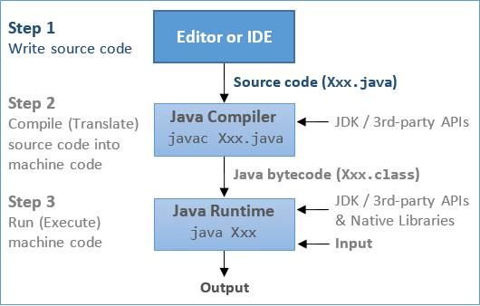Step 1: Write the source code Xxx.java using a programming text editor (such as Sublime Text, Atom, Notepad++, Textpad, gEdit) or an IDE (such as Eclipse or NetBeans).
Step 2: Compile the source code Xxx.java into Java portable bytecode Xxx.class using the JDK Compiler by issuing command:
javac Xxx.java
Step 3: Run the compiled bytecode Xxx.class with the input to produce the desired output, using the Java Runtime by issuing command:
java Xxx
Java Program Template
You can use the following template to write your Java programs. Choose a meaningful "Classname" that reflects the purpose of your program, and write your programming statements inside the body of the main() method. Don't worry about the other terms and keywords now. I will explain them in due course. Provide comments in your program!
/**
* Comment to state the purpose of the program
*/
public class Classname { // Choose a meaningful Classname. Save as "Classname.java"
public static void main(String[] args) { // Entry point of the program
// Your programming statements here!!!
}
}A Sample Program Illustrating Sequential, Decision and Loop Constructs
Below is a simple Java program that demonstrates the three basic programming constructs: sequential, loop, and conditional. Read "Introduction To Java Programming for First-time Programmers" if you need help in understanding this program.
/**
* Find the sums of the running odd numbers and even numbers from a given lowerbound
* to an upperbound. Also compute their absolute difference.
*/
public class OddEvenSum { // Save as "OddEvenSum.java"
public static void main(String[] args) {
// Declare variables
final int LOWERBOUND = 1;
final int UPPERBOUND = 1000; // Define the bounds
int sumOdd = 0; // For accumulating odd numbers, init to 0
int sumEven = 0; // For accumulating even numbers, init to 0
int absDiff; // Absolute difference between the two sums
// Use a while loop to accumulate the sums from LOWERBOUND to UPPERBOUND
int number = LOWERBOUND; // loop init
while (number <= UPPERBOUND) { // loop test
// number = LOWERBOUND, LOWERBOUND+1, LOWERBOUND+1, ..., UPPERBOUND
// A if-then-else decision
if (number % 2 == 0) { // Even number
sumEven += number; // Same as sumEven = sumEven + number
} else { // Odd number
sumOdd += number; // Same as sumOdd = sumOdd + number
}
++number; // loop update for next number
}
// Another if-then-else Decision
if (sumOdd > sumEven) {
absDiff = sumOdd - sumEven;
} else {
absDiff = sumEven - sumOdd;
}
// OR using one liner conditional expression
//absDiff = (sumOdd > sumEven) ? sumOdd - sumEven : sumEven - sumOdd;
// Print the results
System.out.println("The sum of odd numbers from " + LOWERBOUND + " to " + UPPERBOUND + " is: " + sumOdd);
System.out.println("The sum of even numbers from " + LOWERBOUND + " to " + UPPERBOUND + " is: " + sumEven);
System.out.println("The absolute difference between the two sums is: " + absDiff);
}
}The expected outputs are:
The sum of odd numbers from 1 to 1000 is: 250000
The sum of even numbers from 1 to 1000 is: 250500
The absolute difference between the two sums is: 500
Comments
Comments are used to document and explain your code and your program logic. Comments are not programming statements. They are ignored by the compiler and have no consequences to the program execution. Nevertheless, comments are VERY IMPORTANT for providing documentation and explanation for others to understand your programs (and also for yourself three days later).
There are two kinds of comments in Java:
- Multi-Line Comment: begins with a
/*and ends with a*/, and can span multiple lines./** .... */is a special documentation comment. These comment can be extracted to produce documentation. - End-of-Line (Single-Line) Comment: begins with
//and lasts till the end of the current line.
I recommend that you use comments liberally to explain and document your code.
During program development, instead of deleting a chunk of statements irrevocably, you could comment-out these statements so that you could get them back later, if needed.
Statements and Blocks
Statement: A programming statement is the smallest independent unit in a program, just like a sentence in the English language. It performs a piece of programming action. A programming statement must be terminated by a semi-colon (;), just like an English sentence ends with a period. (Why not ends with a period like an English sentence? This is because period crashes with decimal point - it is challenging for the dumb computer to differentiate between period and decimal point in the early days of computing!)
For examples,
// Each of the following lines is a programming statement, which ends with a semi-colon (;).
// A programming statement performs a piece of programming action.
int number1 = 10;
int number2, number3 = 99;
int product;
number2 = 8;
product = number1 * number2 * number3;
System.out.println("Hello");
Block: A block is a group of programming statements surrounded by a pair of curly braces { }. All the statements inside the block is treated as one single unit. Blocks are used as the body in constructs like class, method, if-else and loop, which may contain multiple statements but are treated as one unit (one body). There is no need to put a semi-colon after the closing brace to end a compound statement. Empty block (i.e., no statement inside the braces) is permitted.
For examples,
// Each of the followings is a "compound" statement comprising one or more blocks of statements. // No terminating semi-colon needed after the closing brace to end the "compound" statement. // Take note that a "compound" statement is usually written over a few lines for readability. if (mark >= 50) { // A if statement System.out.println("PASS"); System.out.println("Well Done!"); System.out.println("Keep it Up!"); } if (input != -1) { // A if-else statement System.out.println("Continue"); } else { System.out.println("Exit"); } i = 1; while (i < 8) { // A while-loop statement System.out.print(i + " "); ++i; } public static void main(String[] args) { // A method definition statement ...statements... } public class Hello { // A class definition statement ...statements... }
White Spaces and Formatting Source Code
White Spaces: Blank, tab and newline are collectively called white spaces.
You need to use a white space to separate two keywords or tokens to avoid ambiguity, e.g.,
int sum = 0; // Cannot write "intsum". Need at least one white space between "int" and "sum" double average; // Again, need at least a white space between "double" and "average"
Java, like most of the programming languages, ignores extra white spaces. That is, multiple contiguous white spaces are treated as a single white space. Additional white spaces and extra lines are ignored, e.g.,
// Same as above with many redundant white spaces. Hard to read. int sum =0 ; double average ; // Also same as above with minimal white space. Also hard to read int sum=0;double average;
Formatting Source Code: As mentioned, extra white spaces are ignored and have no computational significance. However, proper indentation (with tabs and blanks) and extra empty lines greatly improves the readability of the program. This is extremely important for others (and yourself three days later) to understand your programs.
For example, the following one-line hello-world program works. But can you read and understand the program?
public class Hello{public static void main(String[] args){System.out.println("Hello, world!");}}
Braces: Java's convention is to place the beginning brace at the end of the line, and to align the ending brace with the start of the statement. Pair-up the { } properly. Unbalanced { } is one of the most common syntax errors for beginners.
Indentation: Indent each level of the body of a block by an extra 3 or 4 spaces according to the hierarchy of the block. Don't use tab because tab-spaces is editor-dependent.
/** * Recommended Java programming style (Documentation comments about the class) */ public class ClassName { // Place the beginning brace at the end of the current line public static void main(String[] args) { // Indent the body by an extra 3 or 4 spaces for each level // Use empty line liberally to improve readability // Sequential statements statement-1; statement-2; // A if-else statement if (test) { true-statements; } else { false-statements; } // A loop statement init; while (test) { body-statements; update; } } } // Ending brace aligned with the start of the statement
"Code is read much more often than it is written." Hence, you have to make sure that your code is readable (by others and yourself 3 days later), by following convention and recommended coding style.
Variables and Types
Variables - Name, Type and Value
Computer programs manipulate (or process) data. A variable is used to store a piece of data for processing. It is called variable because you can change the value stored.
More precisely, a variable is a named storage location, that stores a value of a particular data type. In other words, a variable has a name, a type and stores a value.
- A variable has a name (aka identifier), e.g.,
radius,area,age,heightandnumStudents. The name is needed to uniquely identify and reference each variable. You can use the name to assign a value to the variable (e.g.,radius = 1.2), and to retrieve the value stored (e.g.,radius*radius*3.1419265). - A variable has a data type. The frequently-used Java data types are:
int: meant for integers (whole numbers) such as123and-456.double: meant for floating-point number (real numbers) having an optional decimal point and fractional part, such as3.1416,-55.66,1.2e3, or-4.5E-6, whereeorEdenotes exponent of base10.String: meant for texts such as"Hello"and"Good Morning!".Strings are enclosed within a pair of double quotes.char: meant for a single character, such as'a','8'. Acharis enclosed by a pair of single quotes.
- In Java, you need to declare the name and the type of a variable before using a variable. For examples,
int sum; // Declare an "int" variable named "sum" double average; // Declare a "double" variable named "average" String message; // Declare a "String" variable named "message" char grade; // Declare a "char" variable named "grade"
- A variable can store a value of the declared data type. It is important to take note that a variable in most programming languages is associated with a type, and can only store value of that particular type. For example, an
intvariable can store an integer value such as123, but NOT floating-point number such as12.34, nor string such as"Hello". - The concept of type was introduced in the early programming languages to simplify interpretation of data made up of binary sequences (
0's and1's). The type determines the size and layout of the data, the range of its values, and the set of operations that can be applied.
The following diagram illustrates three types of variables: int, double and String. An int variable stores an integer (or whole number or fixed-point number); a double variable stores a floating-point number (or real number); a String variable stores texts.

Identifiers (or Names)
An identifier is needed to name a variable (or any other entity such as a method or a class). Java imposes the following rules on identifiers:
- An identifier is a sequence of characters, of any length, comprising uppercase and lowercase letters
(a-z, A-Z), digits(0-9), underscore (_), and dollar sign ($). - White space (blank, tab, newline) and other special characters (such as
+,-,*,/,@,&, commas, etc.) are not allowed. Take note that blank and dash (-) are not allowed, i.e., "max value" and "max-value" are not valid names. (This is because blank creates two tokens and dash crashes with minus sign!) - An identifier must begin with a letter
(a-z, A-Z)or underscore (_). It cannot begin with a digit(0-9)(because that could confuse with a number). Identifiers begin with dollar sign ($) are reserved for system-generated entities. - An identifier cannot be a reserved keyword or a reserved literal (e.g.,
class,int,double,if,else,for,true,false,null). - Identifiers are case-sensitive. A
roseis NOT aRose, and is NOT aROSE.
Examples: abc, _xyz, $123, _1_2_3 are valid identifiers. But 1abc, min-value, surface area, ab@c are NOT valid identifiers.
Caution: Programmers don't use blank character in any names (filename, project name, variable name, etc.). It is either not supported (e.g., in Java and C/C++), or will pose you many more challenges.
Variable Naming Convention
A variable name is a noun, or a noun phrase made up of several words with no spaces between words. The first word is in lowercase, while the remaining words are initial-capitalized. For examples, radius, area, fontSize, numStudents, xMax, yMin, xTopLeft, isValidInput, and thisIsAVeryLongVariableName. This convention is also known as camel-case.
Recommendations
- It is important to choose a name that is self-descriptive and closely reflects the meaning of the variable, e.g.,
numberOfStudentsornumStudents, but notnorx, to store the number of students. It is alright to use abbreviations. - Do not use meaningless names like
a,b,c,i,j,k,n,i1,i2,i3,j99,exercise85(what is the purpose of this exercise?), andexample12(What is this example about?). - Avoid single-letter names like
i,j,k,a,b,c, which are easier to type but often meaningless. Exceptions are common names likex,y,zfor coordinates,ifor index. Long names are harder to type, but self-document your program. (I suggest you spend sometimes practicing your typing.) - Use singular and plural nouns prudently to differentiate between singular and plural variables. For example, you may use the variable
rowto refer to a single row number and the variablerowsto refer to many rows (such as an array of rows - to be discussed later).
Variable Declaration
To use a variable in your program, you need to first introduce it by declaring its name and type, in one of the following syntaxes. The act of declaring a variable allocates a storage of size capable of holding a value of the type.
| Syntax | Example |
|---|---|
| // Declare a variable of a specified type type identifier; |
int sum; double average; String statusMsg; |
| // Declare multiple variables of the SAME type, // separated by commas type identifier1, identifier2, ..., identifierN; |
int number, count; double sum, difference, product, quotient; String helloMsg, gameOverMsg; |
| // Declare a variable and assign an initial value type identifier = initialValue; |
int magicNumber = 99; double pi = 3.14169265; String helloMsg = "hello,"; |
| // Declare multiple variables of the SAME type, // with initial values type identifier1 = initValue1, ..., identifierN = initValueN; |
int sum = 0, product = 1; double height = 1.2, length = 3.45; String greetingMsg = "hi!", quitMsg = "bye!"; |
Take note that:
- A variable is declared with a type. Once the type of a variable is declared, it can only store a value belonging to that particular type. For example, an
intvariable can hold only integer (such as123), and NOT floating-point number (such as-2.17) or text string (such as"Hello"). - Each variable can only be declared once because identifier shall be unique.
- You can declare a variable anywhere inside the program, as long as it is declared before being used.
- The type of a variable cannot be changed inside the program, once it is declared.
- A variable declaration statement begins with a type, and works for only that type. In other words, you cannot declare variables of two different types in a single declaration statement.
- Java is a statically-typed language. This means that the type is resolved at compile time and never changes.
Constants (final variables)
Constants are non-modifiable (immutable) variables, declared with keyword final. You can only assign values to final variables ONCE. Their values cannot be changed during program execution. For examples:
final double PI = 3.14159265; // Declare and initialize the constant final int SCREEN_X_MAX = 1280; SCREEN_X_MAX = 800; //compilation error: cannot assign a value to final variable // You can only assign value to final variables ONCE final int SCREEN_Y_MIN; SCREEN_Y_MIN = 0; // First assignment SCREEN_Y_MIN = 10; //compilation error: variable might already have been assigned
Constant Naming Convention: Use uppercase words, joined with underscore. For example, MIN_VALUE, MAX_SIZE, and INTEREST_RATE_6_MTH.
Expressions
An expression is a combination of operators (such as '+' and '-') and operands (variables or literals), that can be evaluated to yield a single value of a certain type.
For example,
// "int" literals ((1 + 2) * 3 / 4) % 6 // This expression is evaluated to an "int" value // "double" literals 3.45 + 6.7 // This expression is evaluated to a "double" value // Assume that variables sum and number are "int" sum + number * number // evaluates to an "int" value // Assume that variables principal and interestRate are "double" principal * (1.0 + interestRate) // evaluates to a "double" value
Assignment (=)
An assignment statement evaluates the RHS (Right-Hand Side) and assigns the resultant value to the variable of the LHS (Left-Hand Side).
The syntax for assignment statement is:
| Syntax | Example |
|---|---|
| // Assign the RHS literal value to the LHS variable variable = literalValue; |
int number; number = 9; |
| // Evaluate the RHS expression and assign the result to the LHS variable variable = expression; |
int sum = 0, number = 8; sum = sum + number; |
The assignment statement should be interpreted this way: The expression on the RHS is first evaluated to produce a resultant value (called r-value or right-value). The r-value is then assigned to the variable on the left-hand-side (LHS) or l-value. Take note that you have to first evaluate the RHS, before assigning the resultant value to the LHS. For examples,
int number; number = 8; // Assign RHS literal value of 8 to the LHS variable number number = number + 1; // Evaluate the RHS expression (number + 1), // and assign the resultant value back to the LHS variable number 8 = number; // Invalid in Programming, LHS shall be a variable number + 1 = sum; // Invalid in Programming, LHS shall be a variable
'=' is Assignment, NOT Equality

In Java, the equal symbol '=' is known as the assignment operator. The meaning of '=' in programming is different from Mathematics. It denotes assignment of the RHS value to the LHS variable, NOT equality of the RHS and LHS. The RHS shall be a literal value or an expression that evaluates to a value; while the LHS must be a variable.
Note that x = x + 1 is valid (and often used) in programming. It evaluates the RHS expression x + 1 and assigns the resultant value to the LHS variable x. On the other hand, x = x + 1 is illegal in Mathematics.
While x + y = 1 is allowed in Mathematics, it is invalid in programming because the LHS of an assignment statement shall be a variable.
Some programming languages use symbol ":=", "->" or "<-" as the assignment operator to avoid confusion with equality.
Primitive Types and String
In Java, there are two broad categories of data types:
- Primitive types (e.g.,
int,double), - Reference types (e.g., objects and arrays).
We shall describe the primitive types here. We will cover the reference types (classes and objects) in the later chapters on "Object-Oriented Programming".
Built-in Primitive Types
| TYPE | DESCRIPTION | |
|---|---|---|
| byte | Integer | 8-bit signed integer The range is [-27, 27-1] = [-128, 127] |
| short | 16-bit signed integer The range is [-215, 215-1] = [-32768, 32767] |
|
| int | 32-bit signed integer The range is [-231, 231-1] = [-2147483648, 2147483647] (≈9 digits, ±2G) |
|
| long | 64-bit signed integer The range is [-263, 263-1] = [-9223372036854775808, 9223372036854775807] (≈19 digits) |
|
| float | Floating-Point Number F x 2E |
32-bit single precision floating-point number ( ≈6-7 significant decimal digits, in the range of ±[1.4x10-45, 3.4028235x1038]) |
| double | 64-bit double precision floating-point number ( ≈14-15 significant decimal digits, in the range of ±[4.9x10-324, 1.7976931348623157x10308]) |
|
| char | Character Represented in 16-bit Unicode '\u0000' to '\uFFFF'.Can be treated as integer in the range of [0, 65535] in arithmetic operations.(Unlike C/C++, which uses 8-bit ASCII code.) |
|
| boolean | Binary Takes a literal value of either true or false.The size of boolean is not defined in the Java specification, but requires at least one bit. booleans are used in test in decision and loop, not applicable for arithmetic operations.(Unlike C/C++, which uses integer 0 for false, and non-zero for true.) |
|
Primitive type are built-into the language for maximum efficiency, in terms of both space and computational efficiency.
Java has eight primitive types, as listed in the above table:
- There are four integer types: 8-bit
byte, 16-bitshort, 32-bitintand 64-bitlong. They are signed integers in 2's complement representation, and can hold a zero, positive and negative integer value of the various ranges as shown in the table. - There are two floating-point types: 32-bit single-precision
floatand 64-bit double-precisiondouble. They are represented in scientific notation ofFx2Ewhere the fraction (F) and exponent (E) are stored separately (as specified by the IEEE 754 standard). Take note that not all real numbers can be represented byfloatanddouble. This is because there are infinite real numbers even in a small range of say[1.0, 1.1], but there is a finite number of patterns in a n-bit representation. Most of the floating-point values are approximated to their nearest representation. - The type
charrepresents a single character, such as'0','A','a'. In Java,charis represented using 16-bit Unicode (in UCS-2 format) to support internationalization (i18n). Acharcan be treated as an integer in the range of[0, 65535]in arithmetic operations. For example, character'0'is48(decimal) or30H(hexadecimal); character'A'is65(decimal) or41H(hexadecimal); character'a'is97(decimal) or61H(hexadecimal). - Java introduces a new binary type called "
boolean", which takes a literal value of eithertrueorfalse.booleans are used in test in decision and loop. They are not applicable to arithmetic operations (such as addition and multiplication).
Integers vs. Floating-Point Numbers
In computer programming, integers (such as 123, -456) and floating-point numbers (such as 1.23, -4.56, 1.2e3, -4.5e-6) are TOTALLY different.
- Integers and floating-point numbers are represented and stored differently.
- Integers and floating-point numbers are operated differently.
How Integers and Floating-Point Numbers are Represented and Stored in Computer Memory?
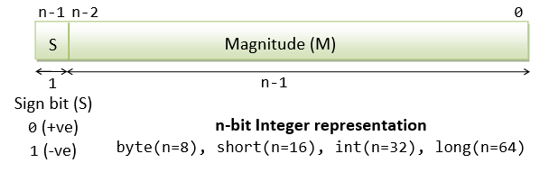Integers are represented in a so called 2's complement scheme as illustrated. The most-significant bit is called Sign Bit (S), where S=0 represents positive integer and S=1 represents negative integer. The remaining bits represent the magnitude of the integers. For positive integers, the magnitude is the same as the binary number, e.g., if n=16 (short), 0000000000000010 is +210. Negative integers require 2's complement conversion.
Floating-point numbers are represented in scientific form of Fx2E, where Fraction (F) and Exponent (E) are stored separately. For example, to store 12.7510; first convert to binary of 1100.112; then normalize to 1.100112 x 23; we have F=1.1011 and E=310=112 which are then stored with some scaling.
For details, read "Data Representation - Integers, Floating-Point Numbers and Characters".
How Integers and Floating-Point Numbers are Operated?
Integers and floating-point numbers are operated differently using different hardware circuitry. Integers are processed in CPU (Central Processing Unit), while floating-point numbers are processed in FPU (Floating-point Co-processor Unit).
Integer operations are straight-forward. For example, integer addition is carried out as illustrated:
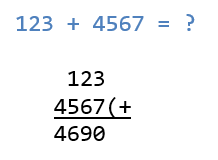On the other hand, floating-point addition is complex, as illustrated:
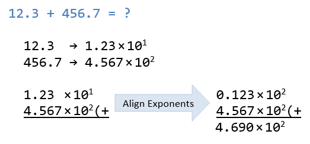It is obvious that integer operations (such as addition) is much faster than floating-point operations.
Furthermore, integer are precise. All numbers within the range can be represented accurately. For example, a 32-bit int can represent ALL integers from -2147483648 to +2147483647 with no gap in between. On the other hand, floating-point are NOT precise, but close approximation. This is because there are infinite floating-point numbers in any interval (e.g., between 0.1 to 0.2). Not ALL numbers can be represented using a finite precision (32-bit float or 64-bit double).
You need to treat integers and Floating-point numbers as two DISTINCT types in programming!
Use integer if possible (it is faster, precise and uses fewer bits). Use floating-point number only if a fractional part is required.
Data Representation
Read "Data Representation - Integers, Floating-Point Numbers and Characters" if you wish to understand how the numbers and characters are represented inside the computer memory.
In brief, It is important to take note that char '1' is different from int 1, byte 1, short 1, float 1.0, double 1.0, and String "1". They are represented differently in the computer memory, with different precision and interpretation. They are also processed differently. For examples:
byte1is"00000001"(8-bit).short1is"00000000 00000001"(16-bit).int1is"00000000 00000000 00000000 00000001"(32-bit).long1is"00000000 00000000 00000000 00000000 00000000 00000000 00000000 00000001"(64-bit).float1.0is"0 01111111 0000000 00000000 00000000"(32-bit).double1.0is"0 01111111111 0000 00000000 00000000 00000000 00000000 00000000 00000000"(64-bit).char'1'is"00000000 00110001"(16-bit) (Unicode number 49).String"1"is a complex object (many many bits).
There is a subtle difference between int 0 and double 0.0 as they have different bit-lengths and internal representations.
Furthermore, you MUST know the type of a value before you can interpret a value. For example, this bit-pattern "00000000 00000000 00000000 00000001" cannot be interpreted unless you know its type (or its representation).
Maximum/Minimum Values of Primitive Number Types
The following program can be used to print the maximum, minimum and bit-length of the primitive types. For example, the maximum, minimum and bit-size of int are kept in built-in constants INTEGER.MIN_VALUE, INTEGER.MAX_VALUE, INTEGER.SIZE.
/** * Print the minimum, maximum and bit-length of all primitive types (except boolean) */ public class PrimitiveTypesMinMaxBitLen { public static void main(String[] args) { /* int (32-bit signed integer) */ System.out.println("int(min) = " + Integer.MIN_VALUE); //int(min) = -2147483648 System.out.println("int(max) = " + Integer.MAX_VALUE); //int(max) = 2147483647 System.out.println("int(bit-length) = " + Integer.SIZE); //int(bit-length) = 32 /* byte (8-bit signed integer) */ System.out.println("byte(min) = " + Byte.MIN_VALUE); //byte(min) = -128 System.out.println("byte(max) = " + Byte.MAX_VALUE); //byte(max) = 127 System.out.println("byte(bit-length) = " + Byte.SIZE); //byte(bit-length) = 8 /* short (16-bit signed integer) */ System.out.println("short(min) = " + Short.MIN_VALUE); //short(min) = -32768 System.out.println("short(max) = " + Short.MAX_VALUE); //short(max) = 32767 System.out.println("short(bit-length) = " + Short.SIZE); //short(bit-length) = 16 /* long (64-bit signed integer) */ System.out.println("long(min) = " + Long.MIN_VALUE); //long(min) = -9223372036854775808 System.out.println("long(max) = " + Long.MAX_VALUE); //long(max) = 9223372036854775807 System.out.println("long(bit-length) = " + Long.SIZE); //long(bit-length) = 64 /* char (16-bit character or 16-bit unsigned integer) */ System.out.println("char(min) = " + (int)Character.MIN_VALUE); //char(min) = 0 System.out.println("char(max) = " + (int)Character.MAX_VALUE); //char(max) = 65535 System.out.println("char(bit-length) = " + Character.SIZE); //char(bit-length) = 16 /* float (32-bit floating-point) */ System.out.println("float(min) = " + Float.MIN_VALUE); //float(min) = 1.4E-45 System.out.println("float(max) = " + Float.MAX_VALUE); //float(max) = 3.4028235E38 System.out.println("float(bit-length) = " + Float.SIZE); //float(bit-length) = 32 /* double (64-bit floating-point) */ System.out.println("double(min) = " + Double.MIN_VALUE); //double(min) = 4.9E-324 System.out.println("double(max) = " + Double.MAX_VALUE); //double(max) = 1.7976931348623157E308 System.out.println("double(bit-length) = " + Double.SIZE); //double(bit-length) = 64 /* No equivalent constants for boolean type */ } }
One More Important Type - String
Beside the 8 primitive types, another important and frequently-used type is String. A String is a sequence of characters (texts) such as "Hello, world". String is not a primitive type (this will be elaborated later).
In Java, a char is a single character enclosed by single quotes (e.g., 'A', '0', '$'); while a String is a sequence of characters enclosed by double quotes (e.g., "Hello").
For example,
String greetingMsg = "hello, world"; // String is enclosed in double-quotes char gender = 'm'; // char is enclosed in single-quotes String statusMsg = ""; // an empty String
Choice of Data Types for Variables
As a programmer, YOU need to decide on the type of the variables to be used in your programs. Most of the times, the decision is intuitive. For example, use an integer type for counting and whole number; a floating-point type for number with fractional part, String for text message, char for a single character, and boolean for binary outcomes.
It is important to take note that your programs will have data of DIFFERENT types.
Rules of Thumb for Choosing Data Types
- For numbers, use an integer type if possible. Use a floating-point type only if the number contains a fractional part. Although floating-point numbers includes integers (e.g.,
1.0,2.0,3.0), floating-point numbers are approximation (not precise) and require more resources (computational and storage) for operations. - Although there are 4 integer types: 8-bit
byte, 16-bitshort, 32-bitintand 64-bitlong, we shall useintfor integers in general. Usebyte,short, andlongonly if you have a good reason to choose that particular precision. - Among there are two floating-point types: 32-bit
floatand 64-bitdouble, we shall usedoublein general. Usefloatonly if you wish to conserve storage and do not need the precision ofdouble. char,booleanandStringhave their specific usage.
Example (Variable Names and Types): Paul has bought a new notebook of "idol" brand, with a processor speed of 2.66GHz, 8 GB of RAM, 500GB hard disk, with a 15-inch monitor, for $1760.55. He has chosen service plan 'C' among plans 'A', 'B', 'C', and 'D', plus on-site servicing but did not choose extended warranty. Identify the data types and name the variables.
The possible variable names and types are:
String name = "Paul"; String brand = "idol"; double processorSpeedInGHz = 2.66; // or float double ramSizeInGB = 8; // or float int harddiskSizeInGB = 500; // or short int monitorInInch = 15; // or byte double price = 1760.55; char servicePlan = 'C'; boolean onSiteService = true; boolean extendedWarranty = false;
Exercise (Variable Names and Types): You are asked to develop a software for a college. The system shall maintain information about students. This includes name, address, phone number, gender, date of birth, height, weight, degree pursued (e.g., B.Sc., B.A.), year of study, average GPA, with/without tuition grant, is/is not a scholar. Each student is assigned a unique 8-digit number as id.
You are required to identify the variables, assign a suitable name to each variable and choose an appropriate type. Write the variable declaration statements as in the above example.
Literals for Primitive Types and String
A literal, or literal constant, is a specific constant value, such as 123, -456, 3.1416, -1.2E3, 4.5e-6, 'a', "Hello", that is used in the program source. It can be assigned directly to a variable; or used as part of an expression. They are called literals because they literally and explicitly identify their values. We call it literal to distinguish it from a variable.
Integer (int, long, short, byte) literals
A whole number literal, such as 123 and -456, is treated as an int by default. For example,
int number = -123; int sum = 1234567890; // This value is within the range of int int bigSum = 8234567890; // error: this value is outside the range of int int intRate = 6%; // error: no percent sign int pay = $1234; // error: no dollar sign int product = 1,234,567; // error: no grouping commas
An int literal may precede with a plus (+) or minus (-) sign, followed by digits. No commas or special symbols (e.g., $, %, or space) is allowed (e.g., 1,234,567, $123 and 12% are invalid).
You can use a prefix '0' (zero) to denote an integer literal value in octal, and prefix '0x' (or '0X') for a value in hexadecimal, e.g.,
int number1 = 1234; // The usual decimal int number2 = 01234; // Octal 1234, Decimal 2322 int number3 = 0017; // Octal 17, Decimal 15 int number4 = 0x1abc; // Hexadecimal 1ABC, decimal 15274
From JDK 7, you can use prefix '0b' or '0B' to specify an integer literal value in binary. You are also permitted to use underscore (_) to break the digits into groups to improve the readability. But you must start and end the literal with a digit, not underscore. For example,
// JDK 7 int number1 = 0b01010000101000101101000010100010; int number2 = 0b0101_0000_1010_0010_1101_0000_1010_0010; // break the bits with underscore int number3 = 2_123_456; // break the decimal digits with underscore int number4 = _123_456; // error: cannot begin or end with underscore
A long literal outside the int range requires a suffix 'L' or 'l' (avoid lowercase 'l', which could be confused with the number one '1'), e.g., 123456789012L, -9876543210l. For example,
long sum = 123; // Within the "int" range, no need for suffix 'L' long bigSum = 1234567890123L; // Outside "int" range, suffix 'L' needed
No suffix is needed for byte and short literals. But you can only use values in the permitted range. For example,
byte smallNumber1 = 123; // This is within the range of byte [-128, 127] byte smallNumber2 = -1234; // error: this value is out of range short midSizeNumber1 = -12345; // This is within the range of short [-32768, 32767] short midSizeNumber2 = 123456; // error: this value is out of range
Floating-point (double, float) literals
A literal number with a decimal point, such as 55.66 and -33.44, is treated as a double by default. You can also express them in scientific notation, e.g., 1.2e3, -5.5E-6, where e or E denotes the exponent in base of 10. You could precede the fractional part or exponent with a plus (+) or minus (-) sign. Exponent values are restricted to integer. There should be no space or other characters in the number.
You are reminded that floating-point numbers are stored in scientific form of Fx2E, where F (Fraction) and E (Exponent) are stored separately.
You can optionally use suffix 'd' or 'D' to denote double literals.
You MUST use a suffix of 'f' or 'F' for float literals, e.g., -1.2345F. For example,
float average = 55.66; // error: RHS is a double. Need suffix 'f' for float. float average = 55.66F; // float literal needs suffix 'f' or 'F' float rate = 1.2e-3; // error: RHS is a double. Need suffix 'f' for float. float rate = 1.2e-3f; // float literal needs suffix 'f' or 'F'
Character (char) Literals and Escape Sequences
A printable char literal (such as letters, digits and special symbols) is written by enclosing the character with a pair of single quotes, e.g., 'A', 'z', '0', '9', '$', and '@'. Special char literals (such as tab, newline) are represented using so-called escape sequences (to be described later).
In Java, chars are represented using 16-bit Unicode. Printable characters for English letters (a-z, A-Z), digits (0-9) and symbols (+, -, @, etc.) are assigned to code numbers 32-126 (20H-7EH), as tabulated below (arranged in decimal and hexadecimal).
| Dec | 0 | 1 | 2 | 3 | 4 | 5 | 6 | 7 | 8 | 9 |
|---|---|---|---|---|---|---|---|---|---|---|
| 3 | SP | ! | " | # | $ | % | & | ' | ||
| 4 | ( | ) | * | + | , | - | . | / | 0 | 1 |
| 5 | 2 | 3 | 4 | 5 | 6 | 7 | 8 | 9 | : | ; |
| 6 | < | = | > | ? | @ | A | B | C | D | E |
| 7 | F | G | H | I | J | K | L | M | N | O |
| 8 | P | Q | R | S | T | U | V | W | X | Y |
| 9 | Z | [ | \ | ] | ^ | _ | ` | a | b | c |
| 10 | d | e | f | g | h | i | j | k | l | m |
| 11 | n | o | p | q | r | s | t | u | v | w |
| 12 | x | y | z | { | | | } | ~ |
| Hex | 0 | 1 | 2 | 3 | 4 | 5 | 6 | 7 | 8 | 9 | A | B | C | D | E | F |
|---|---|---|---|---|---|---|---|---|---|---|---|---|---|---|---|---|
| 2 | SP | ! | " | # | $ | % | & | ' | ( | ) | * | + | , | - | . | / |
| 3 | 0 | 1 | 2 | 3 | 4 | 5 | 6 | 7 | 8 | 9 | : | ; | < | = | > | ? |
| 4 | @ | A | B | C | D | E | F | G | H | I | J | K | L | M | N | O |
| 5 | P | Q | R | S | T | U | V | W | X | Y | Z | [ | \ | ] | ^ | _ |
| 6 | ` | a | b | c | d | e | f | g | h | i | j | k | l | m | n | o |
| 7 | p | q | r | s | t | u | v | w | x | y | z | { | | | } | ~ |
In Java, a char can be treated as its underlying integer in the range of [0, 65535] in arithmetic operations. In other words, char and integer are interchangeable in arithmetic operations. You can treat a char as an int, you can also assign an integer value in the range of [0, 65535] to a char variable. For example,
char letter = 'a'; // Same as 97 char anotherLetter = 98; // Same as the letter 'b' // You can assign an integer in the range of [0, 65535] to char System.out.println(letter); // 'a' printed System.out.println(anotherLetter); // 'b' printed instead of the number, because the type is char anotherLetter += 2; // 100 or 'd' System.out.println(anotherLetter); // 'd' printed
Special characters are represented by so-called escape sequence, which begins with a back-slash (\) followed by a pattern, e.g., \t for tab, \n for newline. The commonly-used escape sequences are:
| Escape Sequence |
Description | Unicode (Decimal) |
Unicode (Hex) |
|---|---|---|---|
| \t | Tab | 9 | 0009H |
| \n | Newline (or Line-feed) | 10 | 000AH |
| \r | Carriage-return | 13 | 000DH |
| \" | Double-quote (Needed to be used inside double-quoted String) |
- | - |
| \' | Single-quote (Needed to be used inside single-quoted char, i.e., '\'') |
- | - |
| \ | Back-slash (Needed as back-slash is given a special meaning) | - | - |
| \uhhhh | Unicode number hhhh (in hex),
e.g., \u60a8 is 您, \u597d is 好 |
- | hhhhH |
For examples,
char tabChar = '\t'; // tab char anotherTabChar = 9; // Code number 9 is tab char newlineChar = '\n'; // newline, code number 10 char backSlashChar = '\\'; // Since back-slash is given a special meaning, // to write a back-slash, use double back-slash char singleQuoteChar = '\''; // Need to use escape sequence to resolve conflict char doubleQuoteChar = '"'; // No conflict. No need for escape sequence System.out.println("A tab " + tabChar + " before this; end with two newlines!" + newlineChar + newlineChar);
String Literals and Escape Sequences
A String is a sequence of characters. A String literal is composed of zero of more characters surrounded by a pair of double quotes. For examples,
String directionMsg = "Turn Right";
String greetingMsg = "Hello";
String statusMsg = ""; // An empty string
You need to use an escape sequence for special non-printable characters, such as newline (\n) and tab (\t). You also need to use escape sequence for double-quote (\") and backslash (\\) due to conflict. For examples,
String str1 = "hello\tworld\n"; // tab and newline String str2 = "a double quoted \"hello\""; String str3 = "1 back-slash \\, another 2 back-slashes \\\\"; String str1 = "A \"string\" nested \\inside\\ a string" // A "string" nested \inside\ a string String str2 = "Hello, \u60a8\u597d!" // "Hello, 您好!"
Single-quote (') inside a String does not require an escape sequence because there is no ambiguity, e.g.,
String str3 = "Hi, I'm a string!" // Single quote OK
It is important to take note that \t or \" is ONE single character, NOT TWO!
Exercise: Write a program to print the following animal picture using System.out.println(). Take note that you need to use escape sequences to print some characters, e.g., \" for ", \\ for \.
'__'
(oo)
+========\/
/ || %%% ||
* ||-----||
"" ""
End-of-Line (EOL)
Newline (0AH) and Carriage-Return (0DH), represented by the escape sequence \n, and \r respectively, are used as line delimiter (or end-of-line, or EOL) for text files. Take note that Unix and macOS use \n (0AH) as EOL, while Windows use \r\n (0D0AH).
boolean Literals
There are only two boolean literals, i.e., true and false. For example,
boolean done = true; boolean gameOver = false; boolean isValid; isValid = false;
Example on Literals
/** * Test literals for various primitive types */ public class LiteralTest { public static void main(String[] args) { String name = "Tan Ah Teck"; // String is double-quoted char gender = 'm'; // char is single-quoted boolean isMarried = true; // boolean of either true or false byte numChildren = 8; // Range of byte is [-127, 128] short yearOfBirth = 1945; // Range of short is [-32767, 32768]. Beyond byte int salary = 88000; // Beyond the ranges of byte and short long netAsset = 8234567890L; // Need suffix 'L' for long. Beyond int double weight = 88.88; // With fractional part float gpa = 3.88f; // Need suffix 'f' for float // println() can be used to print value of any type System.out.println("Name is: " + name); //Name is: Tan Ah Teck System.out.println("Gender is: " + gender); //Gender is: m System.out.println("Is married is: " + isMarried); //Is married is: true System.out.println("Number of children is: " + numChildren); //Number of children is: 8 System.out.println("Year of birth is: " + yearOfBirth); //Year of birth is: 1945 System.out.println("Salary is: " + salary); //Salary is: 88000 System.out.println("Net Asset is: " + netAsset); //Net Asset is: 8234567890 System.out.println("Weight is: " + weight); //Weight is: 88.88 System.out.println("GPA is: " + gpa); //GPA is: 3.88 } }
var - Local Variable Type Inference (JDK 10)
JDK 10 introduces a new way to declare variables via a new keyword var, for examples,
var v1 = 0; // type inferred to "int" var v2 = 0.0; // type inferred to "double" var v3 = 1.0f; // type inferred to "float" var v4 = '0'; // type inferred to "char" var v5 = "hello"; // type inferred to "String" //var v6; //compilation error: cannot use 'var' on variable without initializer
Clearly, you need to initialize the variable, so that the compiler can infer its type.
Basic Operations
Arithmetic Operators
Java supports the following binary/unary arithmetic operations:
| Operator | Mode | Usage | Description | Examples |
|---|---|---|---|---|
| + | Binary Unary |
x + y |
Addition Unary positive |
1 + 2 ⇒ 3 |
| - | Binary Unary |
x - y |
Subtraction Unary negate |
1 - 2 ⇒ -1 |
| * | Binary | x * y |
Multiplication | 2 * 3 ⇒ 6 |
| / | Binary | x / y |
Division | 1 / 2 ⇒ 0 1.0 / 2.0 ⇒ 0.5 |
| % | Binary | x % y |
Modulus (Remainder) | 5 % 2 ⇒ 1 |
These operators are typically binary infix operators, i.e., they take two operands with the operator in between the operands (e.g., 11 + 12). However, '-' and '+' can also be interpreted as unary "negate" and "positive" prefix operator, with the operator in front of the operand. For examples,
int number = -9;
number = -number; // Unary negate
Arithmetic Expressions
In programming, the following arithmetic expression:
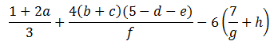must be written as (1+2*a)/3 + (4*(b+c)*(5-d-e))/f - 6*(7/g+h). You cannot omit the multiplication sign (*) as in Mathematics.
Rules on Precedence
Like Mathematics:
- Parentheses
()have the highest precedence and can be used to change the order of evaluation. - Unary
'-'(negate) and'+'(positive) have next higher precedence. - The multiplication (
*), division (/) and modulus (%) have the same precedence. They take precedence over addition (+) and subtraction (-). For example,1+2*3-4/5+6%7is interpreted as1+(2*3)-(4/5)+(6%7). - Within the same precedence level (i.e., addition/subtraction and multiplication/division/modulus), the expression is evaluated from left to right (called left-associative). For examples,
1+2-3+4is evaluated as((1+2)-3)+4, and1*2%3/4is((1*2)%3)/4.
Type Conversion in Arithmetic Operations
Your program typically contains data of many types, e.g., count and sum are int, average and gpa are double, and message is a String. Hence, it is important to understand how Java handles types in your programs.
The arithmetic operators (+, -, *, /, %) are only applicable to primitive number types: byte, short, int, long, float, double, and char. They are not applicable to boolean.
Same-Type Operands of int, long, float, double
If BOTH operands are int, long, float or double, the binary arithmetic operations are carried in that type, and evaluate to a value of that type, i.e.,
int ⊕ int ⇒ int, where⊕denotes a binary arithmetic operators such as+,-,*,/,%.long ⊕ long ⇒ longfloat ⊕ float ⇒ floatdouble ⊕ double ⇒ double
int Division
It is important to take note int division produces an int, i.e., int / int ⇒ int, with the result truncated. For example, 1/2 ⇒ 0 (int), but 1.0/2.0 ⇒ 0.5 (double / double ⇒ double).
Same-Type Operands of byte, short, char: Convert to int
If BOTH operands are byte, short or char, the binary operations are carried out in int, and evaluate to a value of int. A char is treated as an integer of its underlying Unicode number in the range of [0, 65535]. That is,
byte ⊕ byte ⇒ int ⊕ int ⇒ int, where⊕denotes a binary arithmetic operators such as+,-,*,/,%.short ⊕ short ⇒ int ⊕ int ⇒ intchar ⊕ char ⇒ int ⊕ int ⇒ int
Take note that NO arithmetic operations are carried out in byte, short or char.
For examples,
byte b1 = 5, b2 = 9, b3; // byte + byte -> int + int -> int b3 = b1 + b2; // error: RHS is "int", cannot assign to LHS of "byte" b3 = (byte)(b1 + b2); // Need explicit type casting (to be discussed later)
However, if compound arithmetic operators (+=, -=, *=, /=, %=) (to be discussed later) are used, the result is automatically converted to the LHS. For example,
byte b1 = 5, b2 = 9;
b2 += b1; // Result in "int", but automatically converted back to "byte"
Mixed-Type Arithmetic Operations
If the two operands belong to different types, the value of the smaller type is promoted automatically to the larger type (known as implicit type-casting). The operation is then carried out in the larger type, and evaluated to a value in the larger type.
byte,shortorcharis first promoted tointbefore comparing with the type of the other operand. (In Java, no operations are carried out inbyte,shortorchar.)- The order of promotion is:
int ⇒ long ⇒ float ⇒ double.
For examples,
int / double ⇒ double / double ⇒ double. Hence,1/2 ⇒ 0, 1.0/2.0 ⇒ 0.5, 1.0/2 ⇒ 0.5, 1/2.0 ⇒ 0.59 / 5 * 20.1 ⇒ (9 / 5) * 20.1 ⇒ 1 * 20.1 ⇒ 1.0 * 20.1 ⇒ 20.1(You probably don't expect this answer!)char '0' + int 2 ⇒ int 48 + int 2 ⇒ int 50(Result is anint, need to explicitly cast back tochar'2'if desired.)char ⊕ float ⇒ int ⊕ float ⇒ float ⊕ float ⇒ floatbyte ⊕ double ⇒ int ⊕ double ⇒ double ⊕ double ⇒ double
Summary: Type-Conversion Rules for Binary Operations
The type-promotion rules for binary operations can be summarized as follows:
- If one of the operand is
double, the other operand is promoted todouble; - else if one of the operand is
float, the other operand is promoted tofloat; - else if one of the operand is
long, the other operand is promoted tolong; - else both operands are promoted to
int.
Summary: Type-Conversion Rules for Unary Operations
The type-promotion rules for unary operations (e.g., negate '-') can be summarized as follows:
- If the operand is
double,float,longorint, there is no promotion; - else the operand is
byte,short,char, the operand is promoted toint.
More on Arithmetic Operators
Modulus (Remainder) Operator
To evaluate the remainder for negative and floating-point operands, perform repeated subtraction until the absolute value of the remainder is less than the absolute value of the second operand.
For example,
-5 % 2 ⇒ -3 % 2 ⇒ -15.5 % 2.2 ⇒ 3.3 % 2.2 ⇒ 1.1
Exponent?
Java does not have an exponent operator. (The ^ operator denotes exclusive-or, NOT exponent). You need to use JDK method Math.exp(x, y) to evaluate x raises to power y; or write your own code.
Overflow/Underflow
Study the output of the following program:
/** * Illustrate "int" overflow */ public class OverflowTest { public static void main(String[] args) { // Range of int is [-2147483648, 2147483647] int i1 = 2147483647; // maximum int System.out.println(i + 1); //-2147483648 (overflow) System.out.println(i + 2); //-2147483647 (overflow) System.out.println(i + 3); //-2147483646 (overflow) System.out.println(i * 2); //-2 (overflow) System.out.println(i * i); //1 (overflow) int i2 = -2147483648; // minimum int System.out.println(i2 - 1); //2147483647 (overflow) System.out.println(i2 - 2); //2147483646 (overflow) System.out.println(i2 * i2); //0 (overflow) } }
In arithmetic operations, the resultant value wraps around if it exceeds its range (i.e., overflow). Java runtime does NOT issue an error/warning message but produces an incorrect result.
On the other hand, integer division produces a truncated integer and results in so-called underflow. For example, 1/2 gives 0, instead of 0.5. Again, Java runtime does NOT issue an error/warning message, but produces an imprecise result.
It is important to take note that checking of overflow/underflow is the programmer's responsibility. i.e., your job!!!
Why computer does not flag overflow/underflow as an error? This is due to the legacy design when the processors were very slow. Checking for overflow/underflow consumes computation power. Today, processors are fast. It is better to ask the computer to check for overflow/underflow (if you design a new language), because few humans expect such results.
To check for arithmetic overflow (known as secure coding) is tedious. Google for "INT32-C. Ensure that operations on signed integers do not result in overflow" @ www.securecoding.cert.org.
More on Integer vs. Floating-Point Numbers
Integers (byte, short, int, long) are precise (exact). But float and double are not precise but close approximation. Study the results of the following program:
/** * Test preciseness for int/float/double */ public class TestPreciseness { public static void main(String[] args) { // doubles are NOT precise System.out.println(2.2 + 4.4); //6.6000000000000005 System.out.println(6.6 - 2.2 - 4.4); //-8.881784197001252E-16 (NOT Zero!) // Compare two doubles System.out.println((6.6) == (2.2 + 4.4)); //false // int is precise, float/double are NOT! int i1 = 123456789; System.out.println(i1*10); //1234567890 (exact within the range) float f1 = 123456789.0f; // float keeps 6-7 significant digits System.out.println(f1); //1.23456792E8 (=123456792 close but not exact) System.out.println(f1*10); //1.23456794E9 (=1234567940) } }
Always use int if you do not need the fractional part, although double can also represent most of the integers (e.g., 1.0, 2.0, 3.0). This is because:
intis more efficient (faster) thandoublein arithmetic operations.- 32-bit
inttakes less memory space than 64-bitdouble. intis exact (precise) in representing ALL integers within its range.doubleis an approximation - NOT ALL integer values can be represented bydouble.
Type Casting
In Java, you will get a compilation "error: incompatible types: possible lossy conversion from double|float|long to int" if you try to assign a double, float, or long value of to an int variable. This is because the fractional part would be truncated and lost. For example,
// Assign a "double" value to an "int" variable double d = 3.5; int i = d; //Compilation error: incompatible types: possible lossy conversion from double to int // Assign a "float" value to an "int" variable int sum = 55.66f; //Compilation error: incompatible types: possible lossy conversion from float to int // Assign a "long" value to an "int" variable long lg = 123; int count = lg; //Compilation error: incompatible types: possible lossy conversion from long to int
Explicit Type-Casting and Type-Casting Operator
To assign the a double value to an int variable, you need to invoke the so-called type-casting operator - in the form of (int)doubleOperand - to operate on the double operand and return a truncated value in int. In other words, you tell the compiler you consciously perform the truncation and you are fully aware of the "possible lossy conversion". You can then assign the truncated int value to the int variable. For example,
double d = 3.5; int i; i = (int)d; // Cast "double" value of 3.5 to "int" 3. Assign the resultant value 3 to i // Casting from "double" to "int" truncates.
Type casting is an operation which takes one operand. It operates on its operand, and returns an equivalent value in the specified type. The syntax is:
(type)variable // e.g., (int)height (type)literal // e.g., (int)55.66
There are two kinds of type-casting in Java:
- Explicit type-casting via a type-casting operator, as described above, and
- Implicit type-casting performed by the compiler automatically, if there is no loss of precision.
Implicit Type-Casting in Assignment
Explicit type-casting is not required if you assign an int value to a double variable, because there is no loss of precision. The compiler will perform the type-casting automatically (i.e., implicit type-casting). For example,,
int i = 3; double d; d = i; // OK, no explicit type casting required // d = 3.0 d = (double)i; // Explicit type casting operator used here double aDouble = 55; // Compiler auto-casts int 55 to double 55.0 double nought = 0; // Compiler auto-casts int 0 to double 0.0 // int 0 and double 0.0 are different.
The following diagram shows the order of implicit type-casting performed by compiler. The rule is to promote the smaller type to a bigger type to prevent loss of precision, known as widening conversion. Narrowing conversion requires explicit type-cast to inform the compiler that you are aware of the possible loss of precision. Take note that char is treated as an integer in the range of [0, 65535]. boolean value cannot be type-casted (i.e., converted to non-boolean).
Example: Suppose that you want to find the average (in double) of the running integers from 1 and 100. Study the following code:
/** Compute the average of running numbers 1 to 100 */ public class Average1To100 { public static void main(String[] args) { int sum = 0; double average; for (int number = 1; number <= 100; ++number) { sum += number; // Final sum is int 5050 } average = sum / 100; // Won't work (average = 50.0 instead of 50.5) System.out.println("Average is " + average); //Average is 50.0 } }
The average of 50.0 is incorrect. This is because both the sum and 100 are int. The result of int/int is an int, which is then implicitly casted to double and assign to the double variable average. To get the correct answer, you can do either:
average = (double)sum / 100; // Cast sum from int to double before division, double / int -> double / double -> double average = sum / (double)100; // Cast 100 from int to double before division, int / double -> double / double -> double average = sum / 100.0; // int / double -> double / double -> double average = (double)(sum / 100); // Won't work. why?
Compound Assignment Operators
Besides the usual simple assignment operator (=) described earlier, Java also provides the so-called compound assignment operators as listed:
| Operation | Mode | Usage | Description | Example |
|---|---|---|---|---|
| = | Binary | var = expr |
Assignment Assign the LHS value to the RHS variable |
x = 5; |
| += | Binary | var += exprsame as: var = var + expr |
Compound addition and assignment | x += 5;same as: x = x + 5 |
| -= | Binary | var -= exprsame as: var = var - expr |
Compound subtraction and assignment | x -= 5;same as: x = x - 5 |
| *= | Binary | var *= exprsame as: var = var * expr |
Compound multiplication and assignment | x *= 5;same as: x = x * 5 |
| /= | Binary | var /= exprsame as: var = var / expr |
Compound division and assignment | x /= 5;same as: x = x / 5 |
| %= | Binary | var %= exprsame as: var = var % expr |
Compound modulus (remainder) and assignment | x %= 5;same as: x = x % 5 |
One subtle difference between simple and compound operators is in byte, short, char binary operations. For examples,
byte b1 = 5, b2 = 8, b3; b3 = (byte)(b1 + b2); // byte + byte -> int + int -> int, need to explicitly cast back to "byte" b3 = b1 + b2; // error: RHS is int, cannot assign to byte b1 += b2; // implicitly casted back to "byte" char c1 = '0', c2; c2 = (char)(c1 + 2); // char + int -> int + int -> int, need to explicitly cast back to "char" c2 = c1 + 2; // error: RHS is int, cannot assign to char c1 += 2; // implicitly casted back to "char"
Increment/Decrement
Java supports these unary arithmetic operators: increment (++) and decrement (--) for all primitive number types (byte, short, char, int, long, float and double, except boolean). The increment/decrement unary operators can be placed before the operand (prefix), or after the operands (postfix). These operators were introduced in C++ to shorthand x=x+1 to x++ or ++x.
| Operator | Mode | Usage | Description | Example |
|---|---|---|---|---|
| ++ (Increment) |
Unary Prefix Unary Postfix |
++x |
Increment the value of the operand by 1.x++ or ++x is the same as x += 1 or x = x + 1 |
int x = 5; |
| -- (Decrement) |
Unary Prefix Unary Postfix |
--x |
Decrement the value of the operand by 1.x-- or --x is the same as x -= 1 or x = x - 1 |
int y = 6; |
The increment (++) and decrement (--) operate on its sole operand and store the result back to its operand. For example, ++x retrieves x, increment and stores the result back to x.
In Java, there are 4 ways to increment/decrement a variable:
int x = 5; // 4 ways to increment by 1 x = x + 1; // x is 6 x += 1; // x is 7 x++; // x is 8 ++x; // x is 9 // 4 ways to decrement by 1 x = x - 1; // x is 8 x -= 1; // x is 7 x--; // x is 6 --x; // x is 5
Unlike other unary operator (such as negate (-)) which promotes byte, short and char to int, the increment and decrement do not promote its operand because there is no such need.
The increment/decrement unary operator can be placed before the operand (prefix), or after the operands (postfix), which may affect the outcome.
- If these operators are used by themselves (standalone) in a statement (e.g.,
x++; or++x;), the outcomes are the SAME for pre- and post-operators. See above examples. - If
++or--involves another operation in the SAME statement, e.g.,y = x++;ory = ++x;where there are two operations in the same statement: assignment and increment, then pre- or post-order is important to specify the order of these two operations, as tabulated below:
| Operator | Description | Example | Same As |
|---|---|---|---|
| ++var (Pre-Increment) |
Increment var, and return the incremented var for the other operation in the same statement. |
y = ++x; |
x = x + 1; |
| var++ (Post-Increment) |
Return the old value of var for the other operation in the same statement, then increment var. |
y = x++; |
oldX = x; |
| --var (Pre-Decrement) |
Decrement var, and return the decremented var for the other operation in the same statement. |
y = --x; |
x = x - 1; |
| var-- (Post-Decrement) |
Return the old value of var for the other operation in the same statement, then decrement var. |
y = x--; |
oldX = x; |
For examples,
// Two operations in the statement: increment and assignment x = 5; y = ++x; // Increment x (=6), then assign x to y (=6). (++x returns x+1) x = 5; y = x++; // Assign x to y (=5), then increment x (=6). (x++ returns the oldX) // After the operations, x gets the SAME value, but the other operation has different outcomes // Two operations in the statement: increment and println() x = 5; System.out.println(++x); // Increment x (=6), then print x (=6). (++x returns x+1) x = 5; System.out.println(x++); // Print x (=5), then increment x (=6). (x++ returns the oldX)
Notes:
- Prefix operator (e.g.,
++i) could be more efficient than postfix operator (e.g.,i++)?! - What is
i=i++? Try it out!
Relational and Logical Operators
Very often, you need to compare two values before deciding on the action to be taken, e.g. if mark is more than or equals to 50, print "PASS!".
Java provides six comparison operators (or relational operators). All these operators are binary operators (that takes two operands) and return a boolean value of either true or false.
| Operator | Mode | Usage | Description | Example (x=5, y=8) |
|---|---|---|---|---|
| == | Binary | x == y |
Equal to | (x == y) ⇒ false |
| != | Binary | x != y |
Not Equal to | (x != y) ⇒ true |
| > | Binary | x > y |
Greater than | (x > y) ⇒ false |
| >= | Binary | x >= y |
Greater than or equal to | (x >= 5) ⇒ true |
| < | Binary | x < y |
Less than | (y < 8) ⇒ false |
| <= | Binary | x <= y |
Less than or equal to | (y <= 8) ⇒ true |
Take note that the comparison operators are binary infix operators, that operate on two operands with the operator in between the operands, e.g., x <= 100. It is invalid to write 1 < x < 100 (non-binary operations). Instead, you need to break out the two binary comparison operations x > 1, x < 100, and join with a logical AND operator, i.e., (x > 1) && (x < 100), where && denotes AND operator.
Java provides four logical operators, which operate on boolean operands only, in descending order of precedence, as follows:
| Operator | Mode | Usage | Description | Example |
|---|---|---|---|---|
| ! | Unary | !x |
Logical NOT | |
| && | Binary | x && y |
Logical AND | |
| || | Binary | x || y |
Logical OR | |
| ^ | Binary | x ^ y |
Logical Exclusive-OR (XOR) |
The truth tables are as follows:
NOT (!) |
true | false |
|---|---|---|
| Result | false | true |
AND (&&) |
true | false |
|---|---|---|
| true | true | false |
| false | false | false |
OR (||) |
true | false |
|---|---|---|
| true | true | true |
| false | true | false |
XOR (^) |
true | false |
|---|---|---|
| true | false | true |
| false | true | false |
Examples:
// Return true if x is between 0 and 100 (inclusive) (x >= 0) && (x <= 100) // wrong to use 0 <= x <= 100 // Return true if x is outside 0 and 100 (inclusive) (x < 0) || (x > 100) // or !((x >= 0) && (x <= 100)) // Return true if year is a leap year // A year is a leap year if it is divisible by 4 but not by 100, or it is divisible by 400. ((year % 4 == 0) && (year % 100 != 0)) || (year % 400 == 0)
Exercise: Study the following program, and explain its output.
/** * Test relational and logical operators */ public class RelationalLogicalOpTest { public static void main(String[] args) { int age = 18; double weight = 71.23; int height = 191; boolean married = false; boolean attached = false; char gender = 'm'; System.out.println(!married && !attached && (gender == 'm')); //true System.out.println(married && (gender == 'f')); //false System.out.println((height >= 180) && (weight >= 65) && (weight <= 80)); //true System.out.println((height >= 180) || (weight >= 90)); //true } }
Write an expression for all unmarried male, age between 21 and 35, with height above 180, and weight between 70 and 80.
Exercise: Given the year, month (1-12), and day (1-31), write a boolean expression which returns true for dates before October 15, 1582 (Gregorian calendar cut-over date).
Ans: (year < 1582) || (year == 1582 && month < 10) || (year == 1582 && month == 10 && day < 15)
Equality Comparison ==
You can use == to compare two integers (byte, short, int, long) and char. But do NOT use == to compare two floating-point numbers (float and double) because they are NOT precise. To compare floating-point numbers, set a threshold for their difference, e.g.,
public class FloatComparisonTest { public static void main(String[] args) { // floating-point numbers are NOT precise double d1 = 2.2 + 4.4; double d2 = 6.6; System.out.println(d1 == d2); //false System.out.println(d1); //6.6000000000000005 // Set a threshold for comparison with == final double EPSILON = 1e-7; System.out.println(Math.abs(d1 - d2) < EPSILON); //true } }
You also CANNOT use == to compare two Strings because Strings are objects. You need to use str1.equals(str2) instead. This will be elaborated later.
Logical Operator Precedence
The precedence from highest to lowest is: '!' (unary), '^', '&&', '||'. But when in doubt, use parentheses!
System.out.println(true || true && false); //true (same as below) System.out.println(true || (true && false)); //true System.out.println((true || true) && false); //false System.out.println(false && true ^ true); //false (same as below) System.out.println(false && (true ^ true)); //false System.out.println((false && true) ^ true); //true
Short-Circuit Operations
The binary AND (&&) and OR (||) operators are known as short-circuit operators, meaning that the right-operand will not be evaluated if the result can be determined by the left-operand. For example, false && rightOperand gives false and true || rightOperand give true without evaluating the right-operand. This may have adverse consequences if you rely on the right-operand to perform certain operations, e.g. false && (++i < 5) but ++i will not be evaluated.
String and '+' Concatenation Operator
In Java, '+' is a special operator. It is overloaded. Overloading means that it carries out different operations depending on the types of its operands.
- If both operands are numeric (
byte,short,int,long,float,double,char),'+'performs the usual addition. For examples,1 + 2 ⇒ 3 // int + int ⇒ int 1.2 + 2.2 ⇒ 3.4 // double + double ⇒ double 1 + 2.2 ⇒ 1.0 + 2.2 ⇒ 3.2 // int + double ⇒ double + double ⇒ double '0' + 2 ⇒ 48 + 2 ⇒ 50 // char + int ⇒ int + int ⇒ int (need to cast back to char '2')
- If both operands are
Strings,'+'concatenates the twoStrings and returns the concatenatedString. For examples,"Hello" + "world" ⇒ "Helloworld" "Hi" + ", " + "world" + "!" ⇒ "Hi, world!"
- If one of the operand is a
Stringand the other is numeric, the numeric operand will be converted toStringand the twoStrings concatenated, e.g.,"The number is " + 5 ⇒ "The number is " + "5" ⇒ "The number is 5" "The average is " + average + "!" (suppose average=5.5) ⇒ "The average is " + "5.5" + "!" ⇒ "The average is 5.5!" "How about " + a + b (suppose a=1, b=1) ⇒ "How about 1" + b ⇒ "How about 11" (left-associative) "How about " + (a + b) (suppose a=1, b=1) ⇒ "How about " + 2 ⇒ "How about 2"
We use String concatenation operator '+' frequently in the print() and println() to produce the desired output String. For examples,
System.out.println("The sum is: " + sum); // Value of "sum" converted to String and concatenated
System.out.println("The square of " + input + " is " + squareInput);
Flow Control
There are three basic flow control constructs - sequential, conditional (or decision), and loop (or iteration), as illustrated below.
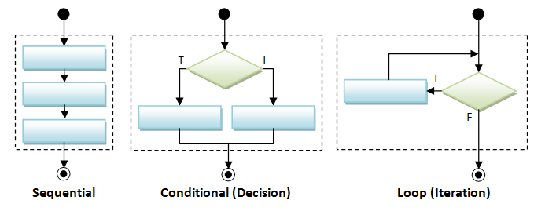Sequential Flow Control

A program is a sequence of instructions executing one after another in a predictable manner. Sequential flow is the most common and straight-forward, where programming statements are executed in the order that they are written - from top to bottom in a sequential manner.
Conditional Flow Control
There are a few types of conditionals, if-then, if-then-else, nested-if, switch-case-default, and conditional expression.
if-then and if-then-else
| Syntax | Example | Flowchart |
|---|---|---|
// if-then if (booleanTest) { trueBlock; } // next statement |
int mark = 80;
if (mark >= 80) {
System.out.println("Well Done!");
System.out.println("Keep it up!");
}
System.out.println("Life goes on!);
double temperature = 80.1;
if (temperature > 80) {
System.out.println("Too Hot!");
}
System.out.println("yummy!"); |
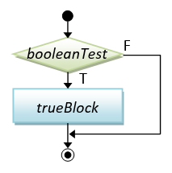 |
// if-then-else if (booleanTest) { trueBlock; } else { falseBlock; } // next statement |
int mark = 50; // Assume that mark is [0, 100] if (mark >= 50) { // [50, 100] System.out.println("Congratulation!"); System.out.println("Keep it up!"); } else { // [0, 49] System.out.println("Try Harder!"); } System.out.println("Life goes on!"); double temperature = 80.1; if (temperature > 80) { System.out.println("Too Hot!"); } else { System.out.println("Too Cold!"); } System.out.println("yummy!"); |
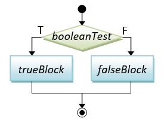 |
Braces: You could omit the braces { }, if there is only one statement inside the block. For example,
// if-then int absValue = -5; if (absValue < 0) absValue = -absValue; // Only one statement in the block, can omit { } int min = 0, value = -5; if (value < min) { // More than one statements in the block, need { } min = value; System.out.println("Found new min"); } // if-then-else int mark = 50; if (mark >= 50) System.out.println("PASS"); // Only one statement in the block, can omit { } else { // More than one statements in the block, need { } System.out.println("FAIL"); System.out.println("Try Harder!"); } // Harder to read without the braces int number1 = 8, number2 = 9, absDiff; if (number1 > number2) absDiff = number1 - number2; else absDiff = number2 - number1;
However, I recommend that you keep the braces to improve the readability of your program, even if there is only one statement in the block.
Nested-if
| Syntax | Example | Flowchart |
|---|---|---|
// nested-if if (booleanTest1) { block1; } else if (booleanTest2) { block2; } else if (booleanTest3) { block3; } else if (booleanTest4) { ...... } else { elseBlock; } // next statement |
int mark = 62; // Assume that mark is [0, 100] if (mark >= 80) { // [80, 100] System.out.println("A"); } else if (mark >= 65) { // [65, 79] System.out.println("B"); } else if (mark >= 50) { // [50, 64] System.out.println("C"); } else { // [0, 49] System.out.println("F"); } System.out.println("Life goes on!"); double temperature = 61; if (temperature > 80) { // > 80 System.out.println("Too Hot!"); } else if (temperature > 75) { // (75, 80] System.out.println("Just right!"); } else { // <= 75 System.out.println("Too Cold!"); } System.out.println("yummy!"); |
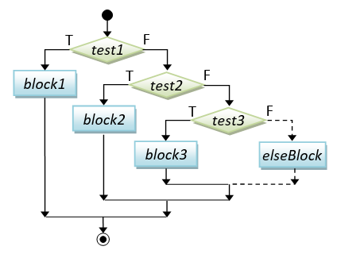 |
Java does not provide a separate syntax for nested-if (e.g., with keywords like eif, elseif), but supports nested-if with nested if-else statements, which is interpreted as below. Take note that you need to put a space between else and if. Writing elseif causes a syntax error.
if ( booleanTest1 ) {
block1;
} else { // This else-block contains a if-else statement
if ( booleanTest2 ) {
block2;
} else { // This else-block also contains a if-else statement
if (booleanTest3) {
block3;
} else { // This else-block also contains a if-else statement
if ( booleanTest4 ) {
......
} else {
elseBlock;
}
}
}
}
// This alignment is hard to read!
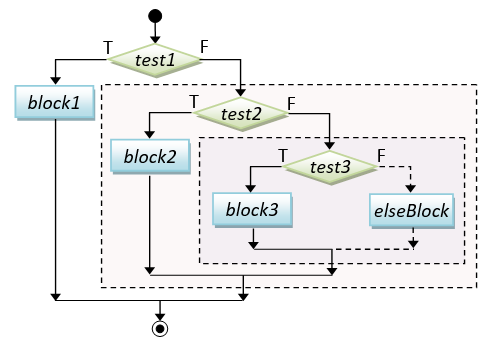
However, for readability, it is recommended to align the nest-if statement as written in the syntax/examples.
Take note that the blocks are exclusive in a nested-if statement; only one of the blocks will be executed. Also, there are two ways of writing nested-if, for example,
// Assume that mark is [0, 100] if (mark >= 80) { // [80, 100] System.out.println("A"); } else if (mark >= 65) { // [65, 79] System.out.println("B"); } else if (mark >= 50) { // [50, 64] System.out.println("C"); } else { // [0, 49] System.out.println("F"); } // OR if (mark < 50) { // [0, 49] System.out.println("F"); } else if (mark < 65) { // [50, 64] System.out.println("C"); } else if (mark < 80) { // [65, 79] System.out.println("B"); } else { // [80, 100] System.out.println("A"); }
Dangling-else Problem
The "dangling-else" problem can be illustrated as follows:
int i = 0, j = 0; if (i == 0) // outer-if if (j == 0) // inner-if System.out.println("i and j are zero"); else System.out.println("xxx"); // This else can pair with the inner-if and outer-if?!
The else clause in the above code is syntactically applicable to both the outer-if and the inner-if, causing the dangling-else problem.
Java compiler resolves the dangling-else problem by associating the else clause with the innermost-if (i.e., the nearest-if). Hence, the above code shall be interpreted as:
int i = 0, j = 0;
if (i == 0)
if (j == 0)
System.out.println("i and j are zero");
else // associated with if (j == 0) - the nearest if
System.out.println("xxx");
Dangling-else can be prevented by applying explicit parentheses. For example, if you wish to associate the else clause with the outer-if, do this:
// Force the else-clause to associate with the outer-if with parentheses int i = 0, j = 0; if (i == 0) { if (j == 0) System.out.println("i and j are zero"); } else { System.out.println("i is not zero"); // non-ambiguous for outer-if } // Force the else-clause to associate with the inner-if with parentheses int i = 0, j = 0; if (i == 0) { if (j == 0) { System.out.println("i and j are zero"); } else { System.out.println("i is zero, j is not zero"); // non-ambiguous for inner-if } }
Nested-if vs. Sequential-if
Study the following code:
// Assume mark is between 0 and 100 // This "sequential-if" works but NOT efficient! // Try mark = 81, which will run thru ALL the if's. int mark = 81; if (mark > 80) { // [81, 100] grade = 'A'; } if (mark > 65 && mark <= 80) { // [66, 80] grade = 'B'; } if (mark >= 50 && mark <= 65) { // [50, 65] grade = 'C'; } if (mark < 50) { // [0, 49] grade = 'F'; } // This "nested-if" is BETTER // Try mark = 81, which only run thru only the first if. int mark = 81; if (mark > 80) { // [81, 100] grade = 'A'; } else if (mark > 65 && mark <= 80) { // [66, 80] grade = 'B'; } else if (mark >= 50 && mark <= 65) { // [50, 65] grade = 'C'; } else { grade = 'F'; // [0, 49] } // This "nested-if" is the BEST with fewer tests int mark = 81; if (mark > 80) { // [81, 100] grade = 'A'; } else if (mark > 65) { // [66, 80] grade = 'B'; } else if (mark >= 50) { // [50, 65] grade = 'C'; } else { // [0, 49] grade = 'F'; }
switch-case-default
| Syntax | Example | Flowchart |
|---|---|---|
// switch-case-default switch (selector) { case value1: block1; break; case value2: block2; break; case value3: block3; break; ...... case valueN: blockN; break; default: // not the above defaultBlock; } // next statement // Selector Types: // byte, short, int, // char, String |
// Print number in word int number = 3; switch (number) { // "int" selector case 1: // "int" value System.out.println("ONE"); break; case 2: System.out.println("TWO"); break; case 3: System.out.println("THREE"); break; default: System.err.println("OTHER"); } // Select arithmetic operation char operator = '*'; int num1 = 5, num2 = 8, result; switch (operator) { // "char" selector case '+': // "char" value result = num1 + num2; break; case '-': result = num1 - num2; break; case '*': result = num1 * num2; break; case '/': result = num1 / num2; break; default: System.out.println("Unknown operator); } |
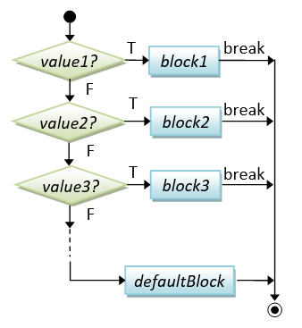 |
"switch-case-default" is an alternative to the "nested-if" for fixed-value tests (but not applicable for range tests). You can use an int, byte, short, or char variable as the case-selector, but NOT long, float, double and boolean. JDK 1.7 supports String as the case-selector.
In a switch-case statement, a break statement is needed for each of the cases. If break is missing, execution will flow through the following case, which is typically a mistake. However, we could use this property to handle multiple-value selector. For example,
// Converting Phone keypad letter to digit char inChar = 'x'; switch (inChar) { case 'a': case 'b': case 'c': // 'a' and 'b' (without break) fall thru 'c' System.out.print(2); break; case 'd': case 'e': case 'f': System.out.print(3); break; case 'g': case 'h': case 'i': System.out.print(4); break; case 'j': case 'k': case 'l': System.out.print(5); break; ...... default: System.out.println("Invalid Input"); }
Conditional Expression ( ... ? ... : ... )
A conditional operator is a ternary (3-operand) operator, in the form of booleanExpr ? trueExpr : falseExpr. Depending on the booleanExpr, it evaluates and returns the value of trueExpr or falseExpr.
| Syntax | Examples |
|---|---|
// Conditional Expression booleanExpr ? trueExpr : falseExpr // An expression that returns // the value of trueExpr // or falseExpr |
int num1 = 9, num2 = 8, max; max = (num1 > num2) ? num1 : num2; // RHS returns num1 or num2 // same as if (num1 > num2) { max = num1; } else { max = num2; } int value = -9, absValue; absValue = (value > 0) ? value : -value; // RHS returns value or -value // same as if (value > 0) absValue = value; else absValue = -value; int mark = 48; System.out.println((mark >= 50) ? "PASS" : "FAIL"); // Return "PASS" or "FAIL" // same as if (mark >= 50) System.out.println("PASS"); else System.out.println("FAIL"); |
Conditional expression is a short-hand for if-else. But you should use it only for one-liner, for readability.
Exercises on Getting Started and Conditional
Loop Flow Control
Again, there are a few types of loops: for, while-do, and do-while.
| Syntax | Example | Flowchart |
|---|---|---|
// while-do loop while (booleanTest) { body; } // next statement |
// Sum from 1 to upperbound int sum = 0; final int UPPERBOUND = 100; int number = 1; // init while (number <= UPPERBOUND) { // number = 1, 2, 3, ..., UPPERBOUND //for each iteration sum += number; ++number; // update } System.out.println("sum is: " + sum); // Factorial of n (=1*2*3*...*n) int n = 5; int factorial = 1; int number = 1; // init while (number <= n) { // num = 1, 2, 3, ..., n for each iteration factorial *= number; ++num; // update } System.out.println("factorial is: " + factorial); |
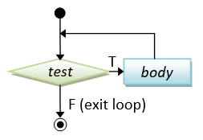 |
// do-while loop do { body; } while (booleanTest; // next statement // Need a semi-colon to // terminate statement |
// Sum from 1 to upperbound int sum = 0; final int UPPERBOUND = 100; int number = 1; // init do { // number = 1, 2, 3, ..., UPPERBOUND // for each iteration sum += number; ++number; // update } while (number <= UPPERBOUND); System.out.println("sum is: " + sum); // Factorial of n (=1*2*3*...*n) int n = 5; int factorial = 1; int number = 1; // init do { // num = 1, 2, 3, ..., n for each iteration factorial *= number; ++number; // update } while (number <= n); System.out.println("factorial is: " + factorial); |
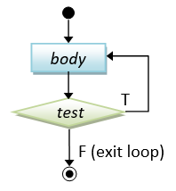 |
// for-loop for (init; booleanTest; update) { body; } // next statement |
// Sum from 1 to upperbound int sum = 0; final int UPPERBOUND = 100; for (int number = 1; number <= UPPERBOUND; ++number) { // num = 1, 2, 3, ..., UPPERBOUND sum += number; } System.out.println("sum is: " + sum); // Factorial of n (=1*2*3*...*n) int n = 5; int factorial = 1; for (int number = 1; number <= n; ++number) { // number = 1, 2, 3, ..., n factorial *= number; } System.out.println("factorial is: " + factorial); |
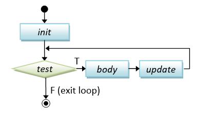 |
The difference between while-do and do-while lies in the order of the body and test. In while-do, the test is carried out first. The body will be executed if the test is true and the process repeats. In do-while, the body is executed and then the test is carried out. Take note that the body of do-while is executed at least once (1+); but the body of while-do is possibly zero (0+). Similarly, the for-loop's body could possibly not executed (0+).
For-loop is a shorthand for while-do with fewer lines of code. It is the most commonly-used loop especially if the number of repetitions is known. But its syntax is harder to comprehend. Make sure that you understand for-loop by going through the flow-chart and examples.
Loop's Index/Counter Variable
A loop is typically controlled by an index or counter variable. For example,
// Sum from 1 to UPPERBOUND using for-loop int sum = 0 final int UPPERBOUND = 100; for (int number = 1; number <= UPPERBOUND; ++number) { // number = 1, 2, 3, ..., UPPERBOUND for each iteration sum += num; } // Sum from 1 to UPPERBOUND using while-loop int sum = 0 final int UPPERBOUND = 100; int number = 1; while (number <= UPPERBOUND) { // number = 1, 2, 3, ..., UPPERBOUND for each iteration sum += number; ++number; }
In the above examples, the variable number serves as the index variable, which takes on the values 1, 2, 3, ..., UPPERBOUND for each iteration of the loop. You need to increase/decrease/modify the index variable explicitly (e.g., via ++number). Otherwise, the loop becomes an endless loop, as the test (number <= UPPERBOUND) will return the same outcome for the same value of number.
Observe that for-loop is a shorthand of while-loop. Both the for-loop and while-loop have the same set of statements, but for-loop re-arranges the statements.
For the for-loop, the index variable number is declared inside the loop, and therefore is only available inside the loop. You cannot access the variable after the loop, as It is destroyed after the loop. On the other hand, for the while-loop, the index variable number is available inside and outside the loop.
For the for-loop, you can choose to declare the index variable inside the loop or outside the loop. We recommend that you declare it inside the loop, to keep the life-span of this variable to where it is needed, and not any longer.
[TODO] Animated GIF??
Code Example: Sum and Average of Running Integers
The following program sums the running integers from a given lowerbound to an upperbound. Also compute their average.
/** * Sum the running integers from lowerbound to an upperbound. * Also compute the average. */ public class SumAverageRunningNumbers { public static void main(String[] args) { // Declare variables int sum = 0; // store the accumulated sum final int LOWERBOUND = 1; final int UPPERBOUND = 1000; double average; // Use a for-loop to accumulate the sum for (int number = LOWERBOUND; number <= UPPERBOUND; ++number) { // number = LOWERBOUND, LOWERBOUND+1, LOWERBOUND+2, ..., UPPERBOUND for each iteration sum += number; } average = (double)sum / (UPPERBOUND - LOWERBOUND + 1); // need to cast int to double first // Print results System.out.println("The sum from " + LOWERBOUND + " to " + UPPERBOUND + " is: " + sum); //The sum from 1 to 1000 is: 500500 System.out.println("The average is: " + average); //The average is: 500.5 // Sum only the ODD numbers int count = 0; // counts of odd numbers sum = 0; // reset sum for accumulation again // Adjust the LOWERBOUND to the next odd number if it is a even number final int ADJUSTED_LOWERBOUND = LOWERBOUND % 2 == 0 ? LOWERBOUND+1 : LOWERBOUND; // Use a for-loop to accumulate the sum with step size of 2 for (int number = ADJUSTED_LOWERBOUND; number <= UPPERBOUND; number += 2) { // number = ADJUSTED_LOWERBOUND, ADJUSTED_LOWERBOUND+2, ADJUSTED_LOWERBOUND+4, // ..., UPPERBOUND for each iteration ++count; sum += number; } average = (double)sum / count; System.out.println("The sum of odd numbers is: " + sum); //The sum of odd numbers is: 250000 System.out.println("The average of odd numbers is: " + average); //The average of odd numbers is: 500.0 } }
Using boolean Flag for Loop Control
Besides using an index variable for loop control, another common way to control the loop is via a boolean flag.
Example: Below is an example of using while-do with a boolean flag. The boolean flag is initialized to false to ensure that the loop is entered.
// Game loop boolean gameOver = false; while (!gameOver) { // play the game ...... // Update the game state // Set gameOver to true if appropriate to exit the game loop if ( ...... ) { gameOver = true; // exit the loop upon the next iteration test } }
Example: Suppose that your program prompts user for a number between 1 to 10, and checks for valid input. A do-while loop with a boolean flag could be more appropriate as it prompts for input at least once, and repeat again and again if the input is invalid.
// Input with validity check boolean isValid = false; int number; do { // prompt user to enter an int between 1 and 10 ...... // if the number entered is valid, set done to exit the loop if (number >= 1 && number <= 10) { isValid = true; // exit the loop upon the next iteration test // Do the operations ...... } else { // Print error message and repeat (isValid remains false) ...... } } while (!isValid); // Repeat for invalid input
for-loop with Comma Separator
You could place more than one statement in the init and update, separated with commas. For example,
// for (init; test; update) { ...... } for (int row = 0, col = 0; row < SIZE; ++row, ++col) { // Process diagonal elements (0,0), (1,1), (2,2),... ...... }
The test, however, must be a boolean expression that returns a boolean true or false.
Terminating Program
System.exit(int exitCode): You could invoke the method System.exit(int exitCode) to terminate the program and return the control to the Java Runtime. By convention, return code of zero indicates normal termination; while a non-zero exitCode indicates abnormal termination. For example,
if (errorCount > 10) {
System.out.println("too many errors");
System.exit(1); // Terminate the program with abnormal exit code of 1
}
The return statement: You could also use a "return" statement in the main() method to terminate the main() and return control back to the Java Runtime.
For example,
public static void main(String[] args) {
...
if (errorCount > 10) {
System.out.println("too many errors");
return; // Terminate and return control to Java Runtime from main()
}
...
}
Exercises on Decision and Loop
Input/Output
Formatted Output via "printf()" (JDK 5)
System.out.print() and println() do not provide output formatting, such as controlling the number of spaces to print an int and the number of decimal places for a double.
Java SE 5 introduced a new method called printf() for formatted output (which is modeled after C Language's printf()). printf() takes the following form:
printf(formattingString, arg1, arg2, arg3, ... );
Formatting-string contains both normal texts and the so-called Format Specifiers. Normal texts (including white spaces) will be printed as they are. Format specifiers, in the form of "%[flags][width]conversionCode", will be substituted by the arguments following the formattingString, usually in a one-to-one and sequential manner. A format specifier begins with a '%' and ends with the conversionCode, e.g., %d for integer, %f for floating-point number (float and double), %c for char and %s for String. An optional width can be inserted in between to specify the field-width. Similarly, an optional flags can be used to control the alignment, padding and others. For examples,
%d, %αd: integer printed in α spaces (α is optional), right-aligned. If α is omitted, the number of spaces is the length of the integer.%s, %αs: String printed in α spaces (α is optional), right-aligned. If α is omitted, the number of spaces is the length of the string (to fit the string).%f, %α.βf, %.βf: Floating point number (floatanddouble) printed in α spaces with β decimal digits (α and β are optional). If α is omitted, the number of spaces is the length of the floating-point number.%n: a system-specific new line (Windows uses"\r\n", Unix and macOS"\n").
Examples:
| Example | Output |
|---|---|
// Without specifying field-width System.out.printf("Hi,|%s|%d|%f|,@xyz%n", "Hello", 123, 45.6); |
Hi,|Hello|123|45.600000|,@xyz |
// Specifying the field-width and decimal places for double System.out.printf("Hi,|%6s|%6d|%6.2f|,@xyz%n", "Hello", 123, 45.6); |
Hi,| Hello| 123| 45.60|,@xyz |
// Various way to format integers: // flag '-' for left-align, '0' for padding with 0 System.out.printf("Hi,|%d|%5d|%-5d|%05d|,@xyz%n", 111, 222, 333, 444); |
Hi,|111| 222|333 |00444|,@xyz |
// Various way to format floating-point numbers: // flag '-' for left-align System.out.printf("Hi,|%f|%7.2f|%.2f|%-7.2f|,@xyz%n", 11.1, 22.2, 33.3, 44.4); |
Hi,|11.100000| 22.20|33.30|44.40 |,@xyz |
// To print a '%', use %% (as % has special meaning) System.out.printf("The rate is: %.2f%%.%n", 1.2); |
The rate is: 1.20%. |
Take note that printf() does not advance the cursor to the next line after printing. You need to explicitly print a newline character (via %n) at the end of the formatting-string to advance the cursor to the next line, if desires, as shown in the above examples.
There are many more format specifiers in Java. Refer to JDK Documentation for the detailed descriptions (@ https://docs.oracle.com/javase/10/docs/api/java/util/Formatter.html for JDK 10).
(Also take note that printf() take a variable number of arguments (or varargs), which is a new feature introduced in JDK 5 in order to support printf())
Input From Keyboard via "Scanner" (JDK 5)
Java, like all other languages, supports three standard input/output streams: System.in (standard input device), System.out (standard output device), and System.err (standard error device). The System.in is defaulted to be the keyboard; while System.out and System.err are defaulted to the display console. They can be re-directed to other devices, e.g., it is quite common to redirect System.err to a disk file to save these error message.
You can read input from keyboard via System.in (standard input device).
JDK 5 introduced a new class called Scanner in package java.util to simplify formatted input (and a new method printf() for formatted output described earlier).
You can construct a Scanner to scan input from System.in (keyboard), and use methods such as nextInt(), nextDouble(), next() to parse the next int, double and String token (delimited by white space of blank, tab and newline).
import java.util.Scanner; // Needed to use the Scanner /** * Test input scanner */ public class ScannerTest { public static void main(String[] args) { // Declare variables int num1; double num2; String str; // Read inputs from keyboard // Construct a Scanner named "in" for scanning System.in (keyboard) Scanner in = new Scanner(System.in); System.out.print("Enter an integer: "); // Show prompting message num1 = in.nextInt(); // Use nextInt() to read an int System.out.print("Enter a floating point: "); // Show prompting message num2 = in.nextDouble(); // Use nextDouble() to read a double System.out.print("Enter a string: "); // Show prompting message str = in.next(); // Use next() to read a String token, up to white space in.close(); // Scanner not longer needed, close it // Formatted output via printf() System.out.printf("%s, Sum of %d & %.2f is %.2f%n", str, num1, num2, num1+num2); } }
You can also use method nextLine() to read in the entire line, including white spaces, but excluding the terminating newline.
/** * Test Scanner's nextLine() */ import java.util.Scanner; // Needed to use the Scanner public class ScannerNextLineTest { public static void main(String[] args) { Scanner in = new Scanner(System.in); System.out.print("Enter a string (with space): "); // Use nextLine() to read entire line including white spaces, // but excluding the terminating newline. String str = in.nextLine(); in.close(); System.out.printf("%s%n", str); } }
Try not to mix nextLine() and nextInt()|nextDouble()|next() in a program (as you may need to flush the newline from the input buffer).
The Scanner supports many other input formats. Check the JDK documentation page, under module java.base ⇒ package java.util ⇒ class Scanner ⇒ Method (@ https://docs.oracle.com/javase/10/docs/api/java/util/Scanner.html for JDK 10).
Code Example: Prompt User for Two Integers and Print their Sum
The following program prompts user for two integers and print their sum. For examples,
Enter first integer: 8 Enter second integer: 9 The sum is: 17
import java.util.Scanner; // For keyboard input /** * 1. Prompt user for 2 integers * 2. Read inputs as "int" * 3. Compute their sum in "int" * 4. Print the result */ public class Add2Integer { // Save as "Add2Integer.java" public static void main (String[] args) { // Declare variables int number1, number2, sum; // Put up prompting messages and read inputs as "int" Scanner in = new Scanner(System.in); // Scan the keyboard for input System.out.print("Enter first integer: "); // No newline for prompting message number1 = in.nextInt(); // Read next input as "int" System.out.print("Enter second integer: "); number2 = in.nextInt(); in.close(); // Compute sum sum = number1 + number2; // Display result System.out.println("The sum is: " + sum); // Print with newline } }
Code Example: Income Tax Calculator
The progressive income tax rate is mandated as follows:
| Taxable Income | Rate (%) |
|---|---|
| First $20,000 | 0 |
| Next $20,000 | 10 |
| Next $20,000 | 20 |
| The remaining | 30 |
For example, suppose that the taxable income is $85000, the income tax payable is $20000*0% + $20000*10% + $20000*20% + $25000*30%.
Write a program called IncomeTaxCalculator that reads the taxable income (in int). The program shall calculate the income tax payable (in double); and print the result rounded to 2 decimal places.
Enter the taxable income: $41234 The income tax payable is: $2246.80 Enter the taxable income: $67891 The income tax payable is: $8367.30 Enter the taxable income: $85432 The income tax payable is: $13629.60 Enter the taxable income: $12345 The income tax payable is: $0.00
import java.util.Scanner; // For keyboard input /** * 1. Prompt user for the taxable income in integer. * 2. Read input as "int". * 3. Compute the tax payable using nested-if in "double". * 4. Print the values rounded to 2 decimal places. */ public class IncomeTaxCalculator { public static void main(String[] args) { // Declare constants first (variables may use these constants) final double TAX_RATE_ABOVE_20K = 0.1; final double TAX_RATE_ABOVE_40K = 0.2; final double TAX_RATE_ABOVE_60K = 0.3; // Declare variables int taxableIncome; double taxPayable; // Prompt and read inputs as "int" Scanner in = new Scanner(System.in); System.out.print("Enter the taxable income: $"); taxableIncome = in.nextInt(); in.close(); // Compute tax payable in "double" using a nested-if to handle 4 cases if (taxableIncome <= 20000) { // [0, 20000] taxPayable = 0; } else if (taxableIncome <= 40000) { // [20001, 40000] taxPayable = (taxableIncome - 20000) * TAX_RATE_ABOVE_20K; } else if (taxableIncome <= 60000) { // [40001, 60000] taxPayable = 20000 * TAX_RATE_ABOVE_20K + (taxableIncome - 40000) * TAX_RATE_ABOVE_40K; } else { // >=60001 taxPayable = 20000 * TAX_RATE_ABOVE_20K + 20000 * TAX_RATE_ABOVE_40K + (taxableIncome - 60000) * TAX_RATE_ABOVE_60K; } // Alternatively, you could use the following nested-if conditions // but the above follows the table data //if (taxableIncome > 60000) { // [60001, ] // ...... //} else if (taxableIncome > 40000) { // [40001, 60000] // ...... //} else if (taxableIncome > 20000) { // [20001, 40000] // ...... //} else { // [0, 20000] // ...... //} // Print result rounded to 2 decimal places System.out.printf("The income tax payable is: $%.2f%n", taxPayable); } }
Code Example: Income Tax Calculator with Sentinel
Based on the previous example, write a program called IncomeTaxCalculatorSentinel which shall repeat the calculations until user enter -1. For example,
Enter the taxable income: $41000 The income tax payable is: $2200.00 Enter the taxable income: $62000 The income tax payable is: $6600.00 Enter the taxable income: $73123 The income tax payable is: $9936.90 Enter the taxable income: $84328 The income tax payable is: $13298.40 Enter the taxable income: $-1 bye!
The -1 is known as the sentinel value. (In programming, a sentinel value, also referred to as a flag value, trip value, rogue value, signal value, or dummy data, is a special value which uses its presence as a condition of termination.)
import java.util.Scanner; // For keyboard input /** * 1. Prompt user for the taxable income in integer. * 2. Read input as "int". * 3. Compute the tax payable using nested-if in "double". * 4. Print the values rounded to 2 decimal places. * 5. Repeat until user enter -1. */ public class IncomeTaxCalculatorSentinel { public static void main(String[] args) { // Declare constants first (variables may use these constants) final double TAX_RATE_ABOVE_20K = 0.1; final double TAX_RATE_ABOVE_40K = 0.2; final double TAX_RATE_ABOVE_60K = 0.3; final int SENTINEL = -1; // Terminating value for input // Declare variables int taxableIncome; double taxPayable; Scanner in = new Scanner(System.in); // Read the first input to "seed" the while loop System.out.print("Enter the taxable income: $"); taxableIncome = in.nextInt(); while (taxableIncome != SENTINEL) { // Compute tax payable in "double" using a nested-if to handle 4 cases if (taxableIncome > 60000) { taxPayable = 20000 * TAX_RATE_ABOVE_20K + 20000 * TAX_RATE_ABOVE_40K + (taxableIncome - 60000) * TAX_RATE_ABOVE_60K; } else if (taxableIncome > 40000) { taxPayable = 20000 * TAX_RATE_ABOVE_20K + (taxableIncome - 40000) * TAX_RATE_ABOVE_40K; } else if (taxableIncome > 20000) { taxPayable = (taxableIncome - 20000) * TAX_RATE_ABOVE_20K; } else { taxPayable = 0; } // Print result rounded to 2 decimal places System.out.printf("The income tax payable is: $%.2f%n", taxPayable); // Read the next input System.out.print("Enter the taxable income: $"); taxableIncome = in.nextInt(); // Repeat the loop body, only if the input is not the SENTINEL value. // Take note that you need to repeat these two statements inside/outside the loop! } System.out.println("bye!"); in.close(); // Close Scanner } }
Notes:
- The coding pattern for handling input with sentinel (terminating) value is as follows:
// Get first input to "seed" the while loop input = ......; while (input != SENTINEL) { // Process input ...... ...... // Get next input and repeat the loop input = ......; // Need to repeat these statements } ......
Code Example: Guess A Number
Guess a number between 0 and 99.
import java.util.Scanner; /** * Guess a secret number between 0 and 99. */ public class NumberGuess { public static void main(String[] args) { // Define variables final int SECRET_NUMBER; // Secret number to be guessed int numberIn; // The guessed number entered int trialNumber = 0; // Number of trials so far boolean done = false; // boolean flag for loop control Scanner in = new Scanner(System.in); // Set up the secret number: Math.random() generates a double in [0.0, 1.0) SECRET_NUMBER = (int)(Math.random()*100); // Use a while-loop to repeatedly guess the number until it is correct while (!done) { ++trialNumber; System.out.print("Enter your guess (between 0 and 99): "); numberIn = in.nextInt(); if (numberIn == SECRET_NUMBER) { System.out.println("Congratulation"); done = true; } else if (numberIn < SECRET_NUMBER) { System.out.println("Try higher"); } else { System.out.println("Try lower"); } } System.out.println("You got in " + trialNumber + " trials"); in.close(); } }
Notes:
- The above program uses a
booleanflag to control the loop, in the following coding pattern:boolean done = false; while (!done) { if (......) { done = true; // exit the loop upon the next iteration ..... } ...... // done remains false. repeat loop }
Exercises on Decision/Loop with Input
Input from Text File via "Scanner" (JDK 5)
Other than scanning System.in (keyboard), you can connect your Scanner to scan any input sources, such as a disk file or a network socket, and use the same set of methods nextInt(), nextDouble(), next(), nextLine() to parse the next int, double, String and line. For example,
Scanner in = new Scanner(new File("in.txt")); // Construct a Scanner to scan a text file
// Use the same set of methods to read from the file
int anInt = in.nextInt(); // next String
double aDouble = in.nextDouble(); // next double
String str = in.next(); // next int
String line = in.nextLine(); // entire line
To open a file via new File(filename), you need to handle the so-called FileNotFoundException, i.e., the file that you are trying to open cannot be found. Otherwise, you cannot compile your program. There are two ways to handle this exception: throws or try-catch.
/** * Input from File. * Technique 1: Declare "throws FileNotFoundException" in the enclosing main() method */ import java.util.Scanner; // Needed for using Scanner import java.io.File; // Needed for file operation import java.io.FileNotFoundException; // Needed for file operation public class TextFileScannerWithThrows { public static void main(String[] args) throws FileNotFoundException { // Declare "throws" here int num1; double num2; String name; Scanner in = new Scanner(new File("in.txt")); // Scan input from text file num1 = in.nextInt(); // Read int num2 = in.nextDouble(); // Read double name = in.next(); // Read String System.out.printf("Hi %s, the sum of %d and %.2f is %.2f%n", name, num1, num2, num1+num2); in.close(); } }
To run the above program, create a text file called in.txt containing:
1234 55.66 Paul
/** * Input from File. * Technique 2: Use try-catch to handle exception */ import java.util.Scanner; // Needed for using Scanner import java.io.File; // Needed for file operation import java.io.FileNotFoundException; // Needed for file operation public class TextFileScannerWithCatch { public static void main(String[] args) { int num1; double num2; String name; try { // try these statements Scanner in = new Scanner(new File("in.txt")); num1 = in.nextInt(); // Read int num2 = in.nextDouble(); // Read double name = in.next(); // Read String System.out.printf("Hi %s, the sum of %d and %.2f is %.2f%n", name, num1, num2, num1+num2); in.close(); } catch (FileNotFoundException ex) { // catch and handle the exception here ex.printStackTrace(); // print the stack trace } } }
Formatted Output to Text File
Java SE 5.0 also introduced a so-called Formatter for formatted output (just like Scanner for formatted input). A Formatter has a method called format(). The format() method has the same syntax as printf(), i.e., it could use format specifiers to specify the format of the arguments. Again, you need to handle the FileNotFoundException.
/** * Output to File. * Technique 1: Declare "throws FileNotFoundException" in the enclosing main() method */ import java.io.File; import java.util.Formatter; // <== note import java.io.FileNotFoundException; // <== note public class TextFileFormatterWithThrows { public static void main(String[] args) throws FileNotFoundException { // <== note // Construct a Formatter to write formatted output to a text file Formatter out = new Formatter(new File("out.txt")); // Write to file with format() method (similar to printf()) int num1 = 1234; double num2 = 55.66; String name = "Paul"; out.format("Hi %s,%n", name); out.format("The sum of %d and %.2f is %.2f%n", num1, num2, num1 + num2); out.close(); // Close the file System.out.println("Done"); // Print to console } }
Run the above program, and check the outputs in text file "out.txt".
/** * Output to File. * Technique 2: Use try-catch to handle exception */ import java.io.File; import java.util.Formatter; // <== note import java.io.FileNotFoundException; // <== note public class TextFileFormatterWithCatch { public static void main(String[] args) { try { // try the following statements // Construct a Formatter to write formatted output to a text file Formatter out = new Formatter(new File("out.txt")); // Write to file with format() method (similar to printf()) int num1 = 1234; double num2 = 55.66; String name = "Pauline"; out.format("Hi %s,%n", name); out.format("The sum of %d and %.2f is %.2f%n", num1, num2, num1 + num2); out.close(); // Close the file System.out.println("Done"); // Print to console } catch (FileNotFoundException ex) { // catch the exception here ex.printStackTrace(); // Print the stack trace } } }
Input via a Dialog Box
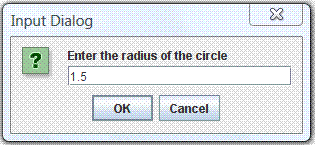You can also get inputs from users via a graphical dialog box, using the JOptionPane class. For example, the following program prompts the user to enter the radius of a circle, and computes the area.
/**
* Input via a Dialog box
*/
import javax.swing.JOptionPane; // Needed to use JOptionPane
public class JOptionPaneTest {
public static void main(String[] args) {
String radiusStr;
double radius, area;
// Read input String from dialog box
radiusStr = JOptionPane.showInputDialog("Enter the radius of the circle");
radius = Double.parseDouble(radiusStr); // Convert String to double
area = radius*radius*Math.PI;
System.out.println("The area is " + area);
}
}Dissecting the Program:
- In Line 4, the
importstatement is needed to use theJOptionPane. - In Line 10, we use the method
JOptionPane.showInputDialog(promptMessage)to prompt users for an input, which returns the input as aString. - Line 11 converts the input
Stringto adouble, using the methodDouble.parseDouble().
java.io.Console (JDK 1.6)
Java SE 6 introduced a new java.io.Console class to simplify character-based input/output to/from the system console. BUT, the Console class does not run under IDE (such as Eclipse/NetBeans)!!!
To use the new Console class, you first use System.console() to retrieve the Console object corresponding to the current system console.
Console con = System.console();
You can then use methods such as readLine() to read a line. You can optionally include a prompting message with format specifiers (e.g., %d, %s) in the prompting message.
String inLine = con.readLine();
String msg = con.readLine("Enter your message: "); // readLine() with prompting message
String msg = con.readLine("%s, enter message: ", name); // Prompting message with format specifier
You can use con.printf() for formatted output with format specifiers such as %d, %s.
You can also connect the Console to a Scanner for formatted input, i.e., parsing primitives such as int, double, for example,
Scanner in = new Scanner(con.reader()); // Use Scanner to scan the Console // Use the Scanner's methods such as nextInt(), nextDouble() to parse primitives int anInt = in.nextInt(); double aDouble = in.nextDouble(); String str = in.next(); String line = in.nextLine();
Example:
/* * Testing java.io.Console class */ import java.io.Console; import java.util.Scanner; public class ConsoleTest { public static void main(String[] args) { Console con = System.console(); // Retrieve the Console object // Console class does not work in Eclipse/NetBeans if (con == null) { System.err.println("Console Object is not available."); System.exit(1); } // Read a line with a prompting message String name = con.readLine("Enter your Name: "); con.printf("Hello %s%n", name); // Use the console with Scanner for parsing primitives Scanner in = new Scanner(con.reader()); con.printf("Enter an integer: "); int anInt = in.nextInt(); con.printf("The integer entered is %d%n", anInt); con.printf("Enter a floating point number: "); double aDouble = in.nextDouble(); con.printf("The floating point number entered is %f%n", aDouble); in.close(); } }
The Console class also provides a secure mean for password entry via method readPassword(). This method disables input echoing and keep the password in a char[] instead of a String. The char[] containing the password can be and should be overwritten, removing it from memory as soon as it is no longer needed. (Recall that Strings are immutable and cannot be overwritten. When they are longer needed, they will be garbage-collected at an unknown instance.)
import java.io.Console; import java.util.Arrays; /** * Inputting password via Console */ public class ConsolePasswordTest { static String login; static char[] password; public static void main(String[] args) { Console con = System.console(); if (con == null) { System.err.println("Console Object is not available."); System.exit(1); } login = con.readLine("Enter your login Name: "); password = con.readPassword("Enter your password: "); if (checkPassword(login, password)) { Arrays.fill(password, ' '); // Remove password from memory // Continue ... } } static boolean checkPassword(String login, char[] password) { return true; } }
Writing Correct and Good Programs
It is important to write programs that produce the correct results. It is also important to write programs that others (and you yourself three days later) can understand, so that the programs can be maintained. I call these programs good programs - a good program is more than a correct program.
Here are the suggestions:
- Follow established convention so that everyone has the same basis of understanding. To program in Java, you MUST read the "Code Convention for the Java Programming Language".
- Format and layout of the source code with appropriate indents, white spaces and white lines. Use 3 or 4 spaces for indent, and blank lines to separate sections of code.
- Choose good names that are self-descriptive and meaningful, e.g.,
row,col,size,xMax,numStudents. Do not use meaningless names, such asa,b,c,d. Avoid single-alphabet names (easier to type but often meaningless), except common names likes x,y,zfor coordinates andifor index. - Provide comments to explain the important as well as salient concepts. Comment your code liberally.
- Write your program documentation while writing your programs.
- Avoid unstructured constructs, such as
breakandcontinue, which are hard to follow. - Use "mono-space" fonts (such as Consolas, Courier New, Courier) for writing/displaying your program.
It is estimated that over the lifetime of a program, 20 percent of the effort will go into the original creation and testing of the code, and 80 percent of the effort will go into the subsequent maintenance and enhancement. Writing good programs which follow standard conventions is critical in the subsequent maintenance and enhancement!!!
Programming Errors: Compilation, Runtime and Logical Errors
There are generally three classes of programming errors:
- Compilation Error (or Syntax Error): The program cannot compile. This can be fixed easily by checking the compilation error messages. For examples,
// System instead of Sys Sys.out.print("Hello"); error: package Sys does not exist
Sys.out.print("Hello"); ^ // Missing semi-colon System.out.print("Hello") error: ';' expected
System.out.print("Hello")
^ - Runtime Error: The program can compile, but fail to run successfully. This can also be fixed easily, by checking the runtime error messages. For examples,
// Divide by 0 Runtime error int count = 0, sum = 100, average; average = sum / count; Exception in thread "main" java.lang.ArithmeticException: / by zero // Wrong conversion code, %d for integer System.out.printf("The sum is: %d%n", 1.23); Exception in thread "main" java.util.IllegalFormatConversionException: d != java.lang.Double
- Logical Error: The program can compile and run, but produces incorrect results (always or sometimes). This is the hardest error to fix as there is no error messages - you have to rely on checking the output. It is easy to detect if the program always produces wrong output. It is extremely hard to fix if the program produces the correct result most of the times, but incorrect result sometimes. For example,
// Can compile and run, but give wrong result – sometimes! if (mark > 50) { System.out.println("PASS"); } else { System.out.println("FAIL"); }This kind of errors is very serious if it is not caught before production. Writing good programs helps in minimizing and detecting these errors. A good testing strategy is needed to ascertain the correctness of the program. Software testing is an advanced topics which is beyond our current scope.
Debugging Programs
Here are the common debugging techniques:
- Stare at the screen! Unfortunately, nothing will pop-up even if you stare at it extremely hard.
- Study the error messages! Do not close the console when error occurs and pretending that everything is fine. This helps most of the times.
- Insert print statements at appropriate locations to display the intermediate results. It works for simple toy program, but it is neither effective nor efficient for complex program.
- Use a graphic debugger. This is the most effective means. Trace program execution step-by-step and watch the value of variables and outputs.
- Advanced tools such as profiler (needed for checking memory leak and method usage).
- Perform program testing to wipe out the logical errors. "Write test first, before writing program".
Exercises on Decision/Loop with Input
Testing Your Program for Correctness
How to ensure that your program always produces correct result, 100% of the times? It is impossible to try out all the possible outcomes, even for a simple program for adding two integers (because there are too many combinations of two integers). Program testing usually involves a set of representative test cases, which are designed to catch all classes of errors. Program testing is beyond the scope of this writing.
More on Loops - Nested-Loops, break & continue
Nested Loops
Nested loops are needed to process 2-dimensional (or N-dimensional) data, such as printing 2D patterns. A nested-for-loop takes the following form:
for (...; ...; ...) { // outer loop
// Before running the inner loop
......
for (...; ...; ...) { // inner loop
......
}
// After running the inner loop
......
}
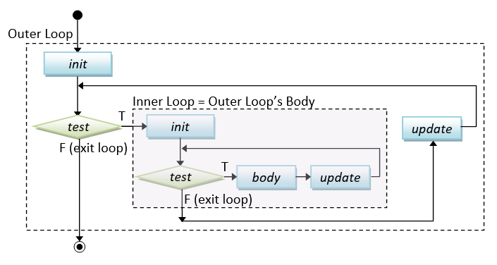
Code Examples: Print Square Pattern
The following program prompt user for the size of the pattern, and print a square pattern using nested-loops. For example,
Enter the size: 5 * * * * * * * * * * * * * * * * * * * * * * * * *
import java.util.Scanner;
/**
* Prompt user for the size; and print Square pattern
*/
public class PrintSquarePattern {
public static void main (String[] args) {
// Declare variables
final int SIZE; // size of the pattern to be input
// Prompt user for the size and read input as "int"
Scanner in = new Scanner(System.in);
System.out.print("Enter the size: ");
SIZE = in.nextInt();
in.close();
// Use nested-loop to print a 2D pattern
// Outer loop to print ALL the rows
for (int row = 1; row <= SIZE; row++) {
// Inner loop to print ALL the columns of EACH row
for (int col = 1; col <= SIZE; col++) {
System.out.print("* ");
}
// Print a newline after all the columns
System.out.println();
}
}
}This program contains two nested for-loops. The inner loop is used to print a row of "* ", which is followed by printing a newline. The outer loop repeats the inner loop to print all the rows.
Coding Pattern: Print 2D Patterns
The coding pattern for printing 2D patterns is as follows. I recommend using row and col as the loop variables which is self-explanatory, instead of i and j, x and y.
for (int row = 1; row <= ROW_SIZE; row++) { // outer loop for rows
...... // before each row
for (int col = 1; col <= COL_SIZE; col++) { // inner loop for columns
if (......) {
System.out.print(......); // without newline
} else {
System.out.print(......);
}
}
...... // after each row
System.out.println(); // Print a newline after all the columns
}
Code Examples: Print Checker Board Pattern
Suppose that you want to print this pattern instead (in program called PrintCheckerPattern):
Enter the size: 6 * * * * * * * * * * * * * * * * * * * * * * * * * * * * * * * * * * * *
You need to print an additional space for even-number rows. You could do so by adding the following statement before the inner loop.
if ((row % 2) == 0) { // print a leading space for even-numbered rows
System.out.print(" ");
}
Code Example: Print Multiplication Table
The following program prompts user for the size, and print the multiplication table as follows:
Enter the size: 10 * | 1 2 3 4 5 6 7 8 9 10 -------------------------------------------- 1 | 1 2 3 4 5 6 7 8 9 10 2 | 2 4 6 8 10 12 14 16 18 20 3 | 3 6 9 12 15 18 21 24 27 30 4 | 4 8 12 16 20 24 28 32 36 40 5 | 5 10 15 20 25 30 35 40 45 50 6 | 6 12 18 24 30 36 42 48 54 60 7 | 7 14 21 28 35 42 49 56 63 70 8 | 8 16 24 32 40 48 56 64 72 80 9 | 9 18 27 36 45 54 63 72 81 90 10 | 10 20 30 40 50 60 70 80 90 100
import java.util.Scanner;
/**
* Prompt user for the size and print the multiplication table.
*/
public class PrintTimeTable {
public static void main(String[] args) {
// Declare variables
final int SIZE; // size of table to be input
// Prompt for size and read input as "int"
Scanner in = new Scanner(System.in);
System.out.print("Enter the size: ");
SIZE = in.nextInt();
in.close();
// Print header row
System.out.print(" * |");
for (int col = 1; col <= SIZE; ++col) {
System.out.printf("%4d", col);
}
System.out.println(); // End row with newline
// Print separator row
System.out.print("----");
for (int col = 1; col <= SIZE; ++col) {
System.out.printf("%4s", "----");
}
System.out.println(); // End row with newline
// Print body using nested-loops
for (int row = 1; row <= SIZE; ++row) { // outer loop
System.out.printf("%2d |", row); // print row header first
for (int col = 1; col <= SIZE; ++col) { // inner loop
System.out.printf("%4d", row*col);
}
System.out.println(); // print newline after all columns
}
}
}TRY:
- Write programs called
PrintPattern1x, which prompts user for the size and prints each these patterns.# * # * # * # * # # # # # # # # # # # # # # # # 1 1 # * # * # * # * # # # # # # # # # # # # # # 2 1 1 2 # * # * # * # * # # # # # # # # # # # # 3 2 1 1 2 3 # * # * # * # * # # # # # # # # # # 4 3 2 1 1 2 3 4 # * # * # * # * # # # # # # # # 5 4 3 2 1 1 2 3 4 5 # * # * # * # * # # # # # # 6 5 4 3 2 1 1 2 3 4 5 6 # * # * # * # * # # # # 7 6 5 4 3 2 1 1 2 3 4 5 6 7 # * # * # * # * # # 8 7 6 5 4 3 2 1 1 2 3 4 5 6 7 8 (a) (b) (c) (d) (e)Hints:
The equations for major and opposite diagonals arerow = colandrow + col = size + 1. Decide on what to print above and below the diagonal. - Write programs called
PrintPattern2x, which prompts user for the size and prints each of these patterns.# # # # # # # # # # # # # # # # # # # # # # # # # # # # # # # # # # # # # # # # # # # # # # # # # # # # # # # # # # # # # # # # # # # # # # # # # # # # # # # # # # # # # # # # # # # # # # # # # # # # # # # # # # # # # # # # # # # # # # (a) (b) (c) (d) (e)
Exercises on Nested Loops with Input
break and continue - Interrupting Loop Flow
The break statement breaks out and exits the current (innermost) loop.
The continue statement aborts the current iteration and continue to the next iteration of the current (innermost) loop.
break and continue are poor structures as they are hard to read and hard to follow. Use them only if absolutely necessary.
Endless loop
for ( ; ; ) { body } is known as an empty for-loop, with empty statement for initialization, test and post-processing. The body of the empty for-loop will execute continuously (infinite loop). You need to use a break statement to break out the loop.
Similar, while (true) { body } and do { body } while (true) are endless loops.
for (;;) {
...... // Need break inside the loop body
}
while (true) {
...... // Need break inside the loop body
}
do {
...... // Need break inside the loop body
} while (true);
Endless loop is typically a mistake especially for new programmers. You need to break out the loop via a break statement inside the loop body..
Example (break): The following program lists the non-prime numbers between 2 and an upperbound.
/** * List all non-prime numbers between 2 and an upperbound */ public class NonPrimeList { public static void main(String[] args) { final int UPPERBOUND = 100; for (int number = 2; number <= UPPERBOUND; ++number) { // Not a prime, if there is a factor between 2 and sqrt(number) int maxFactor = (int)Math.sqrt(number); for (int factor = 2; factor <= maxFactor; ++factor) { if (number % factor == 0) { // Factor? System.out.println(number + " is NOT a prime"); break; // A factor found, no need to search for more factors } } } } }
Let's rewrite the above program to list all the primes instead. A boolean flag called isPrime is used to indicate whether the current number is a prime. It is then used to control the printing.
/** * List all prime numbers between 2 and an upperbound */ public class PrimeListWithBreak { public static void main(String[] args) { final int UPPERBOUND = 100; for (int number = 2; number <= UPPERBOUND; ++number) { // Not a prime, if there is a factor between 2 and sqrt(number) int maxFactor = (int)Math.sqrt(number); boolean isPrime = true; // boolean flag to indicate whether number is a prime for (int factor = 2; factor <= maxFactor; ++factor) { if (number % factor == 0) { // Factor? isPrime = false; // number is not a prime break; // A factor found, no need to search for more factors } } if (isPrime) System.out.println(number + " is a prime"); } } }
Let's rewrite the above program without using break statement. A while loop is used (which is controlled by the boolean flag) instead of for loop with break.
/** * List all prime numbers between 2 and an upperbound */ public class PrimeList { public static void main(String[] args) { final int UPPERBOUND = 100; for (int number = 2; number <= UPPERBOUND; ++number) { // Not prime, if there is a factor between 2 and sqrt of number int maxFactor = (int)Math.sqrt(number); boolean isPrime = true; int factor = 2; while (isPrime && factor <= maxFactor) { if (number % factor == 0) { // Factor of number? isPrime = false; } ++factor; } if (isPrime) System.out.println(number + " is a prime"); } } }
Example (continue):
// Sum 1 to upperbound, exclude 11, 22, 33,... final int UPPERBOUND = 100; int sum = 0; for (int number = 1; number <= UPPERBOUND; ++number) { if (number % 11 == 0) continue; // Skip the rest of the loop body, continue to the next iteration sum += number; } // It is better to re-write the loop as: for (int number = 1; number <= UPPERBOUND; ++number) { if (number % 11 != 0) sum += number; }
Example (break and continue): Study the following program.
/** * A mystery series created using break and continue */ public class MysterySeries { public static void main(String[] args) { int number = 1; while(true) { ++number; if ((number % 3) == 0) continue; if (number == 133) break; if ((number % 2) == 0) { number += 3; } else { number -= 3; } System.out.print(number + " "); } } } // Can you figure out the output? // break and continue are hard to read, use it with great care!
Labeled break
In a nested loop, the break statement breaks out the innermost loop and continue into the outer loop. At times, there is a need to break out all the loops (or multiple loops). This is clumsy to achieve with boolean flag, but can be done easily via the so-called labeled break. You can add a label to a loop in the form of labelName: loop. For example,
level1: // define a label for the level-1 loop for (.....) { level2: // define a label for the level-2 loop for (.....) { for (......) { // level-3 loop if (...) break level1; // break all loops, continue after the loop if (...) break level2: // continue into the next statement of level-1 loop ...... } } }
Labeled continue
In a nested loop, similar to labeled break, you can use labeled continue to continue into a specified loop. For example,
level1: // define a label (with : suffix) for the level-1 loop for (.....) { level2: // define a label (with : suffix) for the level-2 loop for (.....) { for (......) { // level-3 loop if (...) continue level1; // continue the next iteration of level-1 loop if (...) continue level2: // continue the next iteration of level-2 loop ...... } } }
Again, labeled break and continue are not structured and hard to read. Use them only if absolutely necessary.
Example (Labeled break): Suppose that you are searching for a particular number in a 2D array.
public class TestLabeledBreak {
public static void main(String[] args) {
int[][] testArray = {
{1, 2, 3, 4},
{4, 3, 1, 4},
{9, 2, 3, 4}
};
final int MAGIC_NUMBER = 8;
boolean found = false;
mainLoop:
for (int i = 0; i < testArray.length; ++i) {
for (int j = 0; j < testArray[i].length; ++j) {
if (testArray[i][j] == MAGIC_NUMBER) {
found = true;
break mainLoop;
}
}
}
System.out.println("Magic number " + (found ? "found" : "NOT found"));
}
}String and char operations
char Arithmetic Operations
Recall that:
- In Java, each
charis represented by a 16-bit Unicode number. For examples,char'0'is represented by code number48(30H),char'1'by49(31H),char'A'by65(41H).char'a'by97(61H). Take note thatchar'0'is NOTint 0,char'1'is NOTint 1. chars can take part in arithmetic operations. Acharis treated as its underlyingint(in the range of[0, 65535]) in arithmetic operations. In other words,charandintare interchangeable.char '0' ⇔ int 48,char '1' ⇔ int 49,char 'A' ⇔ int 65,char 'a' ⇔ int 97. For examples,char c1 = '0'; // Code number 48 char c2 = 'A'; // Code number 65 char c3; // char <-> int (interchangeable) System.out.println((int)c1); // Print int 48 System.out.println((int)c2); // Print int 65 c3 = 97; // Code number for 'a' System.out.println(c3); // Print char 'a' System.out.println((char)97); // Print char 'a'
- In arithmetic operations,
char(andbyte, andshort) is first converted toint. In Java, arithmetic operations are only carried out inint,long,float, ordouble; NOT inbyte,short, andchar. - Hence,
char ⊕ char ⇒ int ⊕ int ⇒ int, where⊕denotes an binary arithmetic operation (such as+,-,*,/and%). You may need to explicitly cast the resultantintback tochar. For examples,char c1 = '0'; // Code number 48 char c2 = 'A'; // Code number 65 char c3; // char + char -> int + int -> int //c3 = c1 + c2; // error: RHS evaluated to "int", cannot assign to LHS of "char" c3 = (char)(c1 + c2); // Need explicit type casting, return char 'q' (code number 113) System.out.println(c3); // Print 'q', as c3 is a char System.out.println(c1 + c2); // Print int 113 System.out.println((char)(c1 + c2)); // Print char 'q'
- Similar,
char ⊕ int ⇒ int ⊕ int ⇒ int. You may need to explicitly cast the resultantintback tochar. For examples,char c1 = '0'; // Code number 48 char c2 = 'A'; // Code number 65 char c3; // char + int -> int + int -> int //c3 = c1 + 5; // error: RHS evaluated to "int", cannot assign to LHS of "char" c3 = (char)(c1 + 5); // Need explicit type casting, return char '5' (code number 53) System.out.println(c3); // Print '5', as c3 is a char System.out.println(c1 + 5); // Print int 53 // Print the code number for 'a' to 'z' for (int codeNum = 'a'; codeNum <= 'z'; ++codeNum) { System.out.println((char)codeNum + ": " + codeNum); }
- However, for compound operators (such as
+=,-=,*=,/=,%=), the evaluation is carried out inint, but the result is casted back to the LHS automatically. For examples,char c4 = '0'; // Code number 48 c4 += 5; // Automatically cast back to char '5' System.out.println(c4); // Print char '5'
- For increment (
++) and decrement (--) ofchar(andbyte, andshort), there is no promotion toint. For examples,// Print char '0' to '9' via increment for (char c = '0'; c <= '9'; ++c) { // ++c remains as "char" System.out.println(c); }
Converting char to int
You can convert char '0' to '9' to int 0 to 9 by subtracting the char with the base '0', e.g., '8' - '0' ⇒ 8.
That is, suppose c is a char between '0' and '9', (c - '0') is the corresponding int 0 to 9.
The following program illustrates how to convert a hexadecimal character (0-9, A-F or a-f) to its decimal equivalent (0-15), by subtracting the appropriate base char.
// Converting a hex char (0-9|A-F|a-f) to its equivalent decimal (0-15) char hexChar = 'a'; int dec; if (hexChar >= '0' && hexChar <= '9') { dec = hexChar - '0'; // int 0-9 } else if (hexChar >= 'A' && hexChar <= 'F') { dec = hexChar - 'A' + 10; // int 10-15 } else if (hexChar >= 'a' && hexChar <= 'f') { dec = hexChar - 'a' + 10; // int 10-15 } else { dec = -1; // to overcome variable have not been initialized error System.out.println("Invalid hex char"); } System.out.println(hexChar + ": " + dec);
String Operations
The most commonly-used String methods are as follows, suppose that str, str1, str2 are String variables:
str.length(): return the length of thestr.str.charAt(int index): return thecharat theindexposition of thestr. Take note thatindexbegins at0, and up tostr.length()-1.str1.equals(str2): for comparing the contents ofstr1andstr2. Take note that you cannot use"str1 == str2"to compare twoStrings. This is because "==" is only applicable to primitive types, butStringis not a primitive type.
For examples,
String str = "Java is cool!"; System.out.println(str.length()); // return int 13 System.out.println(str.charAt(2)); // return char 'v' System.out.println(str.charAt(5)); // return char 'i' // Comparing two Strings String anotherStr = "Java is COOL!"; System.out.println(str.equals(anotherStr)); // return boolean false System.out.println(str.equalsIgnoreCase(anotherStr)); // return boolean true System.out.println(anotherStr.equals(str)); // return boolean false System.out.println(anotherStr.equalsIgnoreCase(str)); // return boolean true // (str == anotherStr) to compare two Strings is WRONG!!!
To check all the available methods for String, open JDK Documentation ⇒ Select "API documentation" ⇒ Click "FRAMES" (top menu) ⇒ From "Modules" (top-left pane), select "java.base" ⇒ From "java.base Packages" (top-left pane), select "java.lang" ⇒ From "Classes" (bottom-left pane), select "String" ⇒ choose "SUMMARY" "METHOD" (right pane) (@ https://docs.oracle.com/javase/10/docs/api/java/lang/String.html for JDK 10).
For examples,
String str = "Java is cool!"; System.out.println(str.length()); // return int 13 System.out.println(str.charAt(2)); // return char 'v' System.out.println(str.substring(0, 3)); // return String "Jav" System.out.println(str.indexOf('a')); // return int 1 System.out.println(str.lastIndexOf('a')); // return int 3 System.out.println(str.endsWith("cool!")); // return boolean true System.out.println(str.toUpperCase()); // return a new String "JAVA IS COOL!" System.out.println(str.toLowerCase()); // return a new String "java is cool!"
Converting String to Primitive
String to int/byte/short/long
You could use the JDK built-in methods Integer.parseInt(anIntStr) to convert a String containing a valid integer literal (e.g., "1234") into an int (e.g., 1234). The runtime triggers a NumberFormatException if the input string does not contain a valid integer literal (e.g., "abc"). For example,
String inStr = "5566"; int number = Integer.parseInt(inStr); // number <- 5566 // Input to Integer.parseInt() must be a valid integer literal //number = Integer.parseInt("abc"); // Runtime Error: NumberFormatException
Similarly, you could use methods Byte.parseByte(aByteStr), Short.parseShort(aShortStr), Long.parseLong(aLongStr) to convert a String containing a valid byte, short or long literal to the primitive type.
String to double/float
You could use Double.parseDouble(aDoubleStr) or Float.parseFloat(aFloatStr) to convert a String (containing a floating-point literal) into a double or float, e.g.
String inStr = "55.66"; float aFloat = Float.parseFloat(inStr); // aFloat <- 55.66f double aDouble = Double.parseDouble("1.2345"); // aDouble <- 1.2345 aDouble = Double.parseDouble("1.2e-3"); // aDouble <- 0.0012 // Input to Integer.parseInt() must be a valid double literal //aDouble = Double.parseDouble("abc"); // Runtime Error: NumberFormatException
String to char
You can use aStr.charAt(index) to extract individual character from a String, where index begins at 0 and up to aStr.length()-1, e.g.,
// Extract each char String msg = "Hello, world"; char msgChar; for (int idx = 0; idx < msg.length(); ++idx) { msgChar = msg.charAt(idx); // Do something about the extracted char ....... }
String to boolean
You can use method Boolean.parseBoolean(aBooleanStr) to convert string of "true" or "false" to boolean true or false, e.g.,
String boolStr = "true"; boolean done = Boolean.parseBoolean(boolStr); // done <- true boolean valid = Boolean.parseBoolean("false"); // valid <- false
Converting Primitive to String
To convert a primitive to a String, you can:
- Use the '
+' operator to concatenate the primitive with an emptyString "". - Use the JDK built-in methods
String.valueOf(aPrimitive), which is applicable to all primitives. - Use the
toString()methods of the respective wrapper class, such asInteger.toString(anInt),Double.toString(aDouble),Character.toString(aChar),Boolean.toString(aBoolean), etc.
For examples,
// Using String concatenation operator '+' with an empty String (applicable to ALL primitive types) String str1 = 123 + ""; // int 123 -> String "123" String str2 = 12.34 + ""; // double 12.34 -> String "12.34" String str3 = 'c' + ""; // char 'c' -> String "c" String str4 = true + ""; // boolean true -> String "true" // Using String.valueOf(aPrimitive) (applicable to ALL primitive types) String str5 = String.valueOf(12345); // int 12345 -> String "12345" String str6 = String.valueOf(true); // boolean true -> String "true" String str7 = String.valueOf(55.66); // double 55.66 -> String "55.66" // Using toString() for each primitive type String str8 = Integer.toString(1234); // int 1234 -> String "1234" String str9 = Double.toString(1.23); // double 1.23 -> String "1.23" String str10 = Character.toString('z'); // char 'z' -> String "z"
Formatting Strings - String.format()
Recall that you can use printf() to create a formatted string and send it to the display console, e.g.,
System.out.printf("Hi, %d, %.1f%n", 11, 22.22); // Send the formatted String to console
There is a similar function called String.format() which returns the formatted string, instead of sending to the console, e.g.,
String str = String.format("%.1f", 1.234); // Returns a String "1.2" (for further operations)
String.format() has the same form as printf().
Code Example: Reverse String
The following program prompts user a string, and prints the input string in the reverse order. For examples,
Enter a String: abcdefg The reverse is: gfedcba
import java.util.Scanner;
/**
* Prompt user for a string; and print the input string in reverse order.
*/
public class ReverseString {
public static void main(String[] args) {
// Declare variables
String inStr; // input String
int inStrLen; // length of the input String
// Prompt and read input as "String"
Scanner in = new Scanner(System.in);
System.out.print("Enter a String: ");
inStr = in.next();
inStrLen = inStr.length();
in.close();
System.out.print("The reverse is: ");
// Use a for-loop to extract each char in reverse order
for (int inCharIdx = inStrLen - 1; inCharIdx >= 0; --inCharIdx) {
System.out.print(inStr.charAt(inCharIdx));
}
System.out.println();
}
}Code Example: Validating Binary String
The following program prompts user for a string, and checks if the input is a valid binary string, consisting of '0' and '1' only. For example,
Enter a binary string: 1011000 "1011000" is a binary string Enter a binary string: 10001900 "10001900" is NOT a binary string
Version 1: With a boolean flag
import java.util.Scanner;
/**
* Check if the input string is a valid binary string.
*/
public class ValidateBinString {
public static void main(String[] args) {
// Declare variables
String inStr; // The input string
int inStrLen; // The length of the input string
char inChar; // Each char of the input string
boolean isValid; // "is" or "is not" a valid binary string?
// Prompt and read input as "String"
Scanner in = new Scanner(System.in);
System.out.print("Enter a binary string: ");
inStr = in.next();
inStrLen = inStr.length();
in.close();
isValid = true; // Assume that the input is valid, unless our check fails
for (int inCharIdx = 0; inCharIdx < inStrLen; ++inCharIdx) {
inChar = inStr.charAt(inCharIdx);
if (!(inChar == '0' || inChar == '1')) {
isValid = false;
break; // break the loop upon first error, no need to continue for more errors
// If this is not encountered, isValid remains true after the loop.
}
}
System.out.println("\"" + inStr + "\" is " + (isValid ? "" : "NOT ") + "a binary string");
}
}Version 2
import java.util.Scanner;
/**
* Check if the input string is a valid binary string.
*/
public class ValidateBinStringV2 {
public static void main(String[] args) {
// Declare variables
String inStr; // The input string
int inStrLen; // The length of the input string
char inChar; // Each char of the input string
// Prompt and read input as "String"
Scanner in = new Scanner(System.in);
System.out.print("Enter a binary string: ");
inStr = in.next();
inStrLen = inStr.length();
in.close();
for (int inCharIdx = 0; inCharIdx < inStrLen; ++inCharIdx) {
inChar = inStr.charAt(inCharIdx);
if (!(inChar == '0' || inChar == '1')) {
System.out.println("\"" + inStr + "\" is NOT a binary string");
return; // exit the program upon the first error detected
}
}
// for-loop completed. No error detected.
System.out.println("\"" + inStr + "\" is a binary string");
}
}This version, although shorter, are harder to read, and harder to maintain.
Code Example: Binary to Decimal (Bin2Dec)
The following program prompts user for a binary string, and converts into its equivalent decimal number. For example,
Enter a binary string: 10001001 The equivalent decimal for "10001001" is 137
import java.util.Scanner;
/**
* Prompt user for a binary string, and convert into its equivalent decimal number.
*/
public class Bin2Dec {
public static void main(String[] args) {
// Declare variables
String binStr; // The input binary string
int binStrLen; // The length of binStr
int dec = 0; // The decimal equivalent, to accumulate from 0
char binChar; // Each individual char of the binStr
// Prompt and read input as "String"
Scanner in = new Scanner(System.in);
System.out.print("Enter a binary string: ");
binStr = in.next();
binStrLen = binStr.length();
in.close();
// Process char by char from the right (i.e. Least-significant bit)
// using exponent as loop index.
for (int exp = 0; exp < binStrLen ; ++exp) {
binChar = binStr.charAt(binStrLen - 1 - exp);
// 3 cases: '1' (add to dec), '0' (valid but do nothing), other (error)
if (binChar == '1') {
dec += (int)Math.pow(2, exp); // cast the double result back to int
} else if (binChar == '0') {
} else {
System.out.println("error: invalid binary string \"" + binStr + "\"");
return; // or System.exit(1);
}
}
// Print result
System.out.println("The equivalent decimal for \"" + binStr + "\" is " + dec);
}
}Notes:
- The conversion formula is:
binStr = bn-1bn-2....b2b1b0 hi∈{0,1} where b0 is the least-significant bit dec = bn-1×2n-1 + bn-2×2n-2 + ... + b2×22 + b1×21 + b0×20 - We use
binStr.charAt(idx)to extract each individualcharfrom thebinStr. Theidxbegins at zero, and increases from left-to-right. On the other hand, the exponent number increases from right-to-left, as illustrated in the following example:binStr : 1 0 1 1 1 0 0 1 charAt(idx) : 0 1 2 3 4 5 6 7 (idx increases from the left) Math.pow(2, exp) : 7 6 5 4 3 2 1 0 (exp increases from the right) binStr.length() = 8 idx + exp = binStr.length() - 1
- This code uses
expas the loop index, and computes theidxforcharAt()using the relationshipidx + exp = binStr.length() - 1. You could also use theidxas the loop index (see next example). - We use the built-in function
Math.pow(x, y)to compute the exponent, which takes twodoubles and return adouble. We need to explicitly cast the resultantdoubleback tointfordec. - There are 3 cases to handle:
'1'(add todec),'0'(valid but do nothing for multiply by0) and other (error). We can write the nested-if as follows, but that is harder to read:if (binChar == '1') { dec += (int)Math.pow(2, exp); // cast the double result back to int } else if (binChar != '0') { System.out.println("error: invalid binary string \"" + binStr + "\""); return; // or System.exit(1); } // else (binChar == '0') do nothing - You can use
Scanner'snextInt(int radix)method to read anintin the desiredradix. Try reading a binary number (radix of 2) and print its decimal equivalent. For example,number = in.nextInt(2); // Input in binary e.g., 10110100 System.out.println(number); // 180
Code Example: Hexadecimal to Decimal (Hex2Dec)
The following program prompts user for a hexadecimal string and converts into its equivalent decimal number. For example,
Enter a Hexadecimal string: 10aB The equivalent decimal for "10aB" is 4267
import java.util.Scanner;
/**
* Prompt user for the hexadecimal string, and convert to its equivalent decimal number
*/
public class Hex2Dec {
public static void main(String[] args) {
// Declare variables
String hexStr; // The input hexadecimal String
int hexStrLen; // The length of hexStr
int dec = 0; // The decimal equivalent, to accumulate from 0
// Prompt and Read input as "String"
Scanner in = new Scanner(System.in);
System.out.print("Enter a Hexadecimal string: ");
hexStr = in.next();
hexStrLen = hexStr.length();
in.close();
// Process char by char from the left (most-significant digit)
for (int charIdx = 0; charIdx < hexStrLen; ++charIdx) {
char hexChar = hexStr.charAt(charIdx);
int expFactor = (int)Math.pow(16, hexStrLen - 1 - charIdx);
// 23 cases: '0'-'9', 'a'-'f', 'A'-'F', other (error)
if (hexChar == '0') {
// Valid but do nothing
} else if (hexChar >= '1' && hexChar <= '9') {
dec += (hexChar - '0') * expFactor; // Convert char '0'-'9' to int 0-9
} else if (hexChar >= 'a' && hexChar <= 'f') {
dec += (hexChar - 'a' + 10) * expFactor; // Convert char 'a'-'f' to int 10-15
} else if (hexChar >= 'A' && hexChar <= 'F') {
dec += (hexChar - 'A' + 10) * expFactor; // Convert char 'A'-'F' to int 10-15
} else {
System.out.println("error: invalid hex string \"" + hexStr + "\"");
return; // or System.exit(1);
}
}
System.out.println("The equivalent decimal for \"" + hexStr + "\" is " + dec);
}
}Notes:
- The conversion formula is:
hexStr = hn-1hn-2....h2b1h0 hi∈{0,..,9,A,..,F} where h0 is the least-significant digit dec = hn-1×16n-1 + hn-2×16n-2 + ... + h2×162 + h1×161 + h0×160 - In this example, we use the
charIdxas the loop index, and compute the exponent via the relationshipcharIdx + exp = hexStr.length() - 1(See the illustration in the earlier example). - You could write a big
switchof 23cases (0-9,A-F,a-f, and other). But take note how they are reduced to 5 cases.- To convert
hexChar'1'to'9'toint1to9, we subtract thehexCharby the base'0'. - Similarly, to convert
hexChar'a'to'f'(or'A'to'F') toint10to15, we subtract thehexCharby the base'a'(or'A') and add10.
- To convert
- You may use
str.toLowerCase()to convert the input string to lowercase to further reduce the number of cases. But You need to keep the originalStringfor output in this example (otherwise, you could usein.next().toLowerCase()directly).
Exercises on String and char operations
Arrays
Suppose that you want to find the average of the marks for a class of 30 students, you certainly do not want to create 30 variables: mark1, mark2, ..., mark30. Instead, You could use a single variable, called an array, with 30 elements (or items).
An array is an ordered collection of elements of the same type, identified by a pair of square brackets [ ]. To use an array, you need to:
- Declare the array with a name and a type. Use a plural name for array, e.g.,
marks,rows,numbers. All elements of the array belong to the same type. - Allocate the array using
newoperator, or through initialization, e.g.,int[] marks; // Declare an int array named "marks" // "marks" is assigned to a special value called "null" before allocation int marks[]; // Same as above, but the above syntax recommended marks = new int[5]; // Allocate 5 elements via the "new" operator // Declare and allocate a 20-element array in one statement via "new" operator int[] factors = new int[20]; // Declare, allocate a 6-element array thru initialization int[] numbers = {11, 22, 33, 44, 55, 66}; // size of array deduced from the number of items
When an array is constructed via the new operator, all the elements are initialized to their default value, e.g., 0 for int, 0.0 for double, false for boolean, and null for objects. [Unlike C/C++, which does NOT initialize the array contents.]
When an array is declared but not allocated, it has a special value called null.
Array Index
You can refer to an element of an array via an index (or subscript) enclosed within the square bracket [ ]. Java's array index begins with zero (0). For example, suppose that marks is an int array of 5 elements, then the 5 elements are: marks[0], marks[1], marks[2], marks[3], and marks[4].
int[] marks = new int[5]; // Declare & allocate a 5-element int array // Assign values to the elements marks[0] = 95; marks[1] = 85; marks[2] = 77; marks[3] = 69; marks[4] = 66; // Retrieve elements of the array System.out.println(marks[0]); System.out.println(marks[3] + marks[4]);
Array's length
To create an array, you need to known the length (or size) of the array in advance, and allocate accordingly. Once an array is created, its length is fixed and cannot be changed during runtime. At times, it is hard to ascertain the length of an array (e.g., how many students?). Nonetheless, you need to estimate the length and allocate an upper bound. Suppose you set the length to 30 (for a class of students) and there are 31 students, you need to allocate a new array (of length 31), copy the old array to the new array, and delete the old array. In other words, the length of an array cannot be dynamically adjusted during runtime. This is probably the major drawback of using an array. (There are other structures that can be dynamically adjusted.)
In Java, the length of array is kept in an associated variable called length and can be retrieved using "arrayName.length", e.g.,
int[] factors = new int[5]; // Declare and allocate a 5-element int array int numFactors = factors.length; // numFactor is 5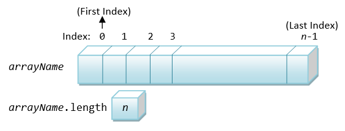
The index of an array is between 0 and arrayName.length - 1.
Unlike languages like C/C++, Java performs array index-bound check at the runtime. In other words, for each reference to an array element, the index is checked against the array's length. If the index is outside the range of [0, arrayName.length-1], Java Runtime will signal an exception called ArrayIndexOutOfBoundException. It is important to note that checking array index-bound consumes computation power, which inevitably slows down the processing. However, the benefits gained in terms of good software engineering out-weight the slow down in speed.
Array and Loop
Arrays works hand-in-hand with loops. You can process all the elements of an array via a loop, for example,
/**
* Find the mean and standard deviation of numbers kept in an array
*/
public class MeanSDArray {
public static void main(String[] args) {
// Declare variable
int[] marks = {74, 43, 58, 60, 90, 64, 70};
int sum = 0;
int sumSq = 0;
double mean, stdDev;
// Compute sum and square-sum using loop
for (int i = 0; i < marks.length; ++i) {
sum += marks[i];
sumSq += marks[i] * marks[i];
}
mean = (double)sum / marks.length;
stdDev = Math.sqrt((double)sumSq / marks.length - mean * mean);
// Print results
System.out.printf("Mean is: %.2f%n", mean);
System.out.printf("Standard deviation is: %.2f%n", stdDev);
}
}Enhanced for-loop (or "for-each" Loop) (JDK 5)
JDK 5 introduces a new loop syntax known as enhanced for-loop (or for-each loop) to facilitate processing of arrays and collections. It takes the following syntax:
| Syntax | Example |
|---|---|
for (type item : anArray) { body; } // type must be the same as the // anArray's type |
int[] numbers = {8, 2, 6, 4, 3};
int sum = 0, sumSq = 0;
for (int number : numbers) { // for each int number in int[] numbers
sum += number;
sumSq += number * number;
}
System.out.println("The sum is: " + sum);
System.out.println("The square sum is: " + sumSq);
|
This loop shall be read as "for each element in the array...". The loop executes once for each element in the array, with the element's value copied into the declared variable. The for-each loop is handy to transverse all the elements of an array. It requires fewer lines of code, eliminates the loop counter and the array index, and is easier to read. However, for array of primitive types (e.g., array of ints), it can read the elements only, and cannot modify the array's contents. This is because each element's value is copied into the loop's variable, instead of working on its original copy.
In many situations, you merely want to transverse thru the array and read each of the elements. For these cases, enhanced for-loop is preferred and recommended over other loop constructs.
Code Example: Read and Print Array
The following program prompts user for the length and all the elements of an array, and print the array in the form of [a0, a1, ..., an]. For examples,
Enter the number of items: 5 Enter the value of all items (separated by space): 7 9 1 6 2 The values are: [7, 9, 1, 6, 2]
import java.util.Scanner;
/**
* Prompt user for the length and all the elements of an array; and print [a1, a2, ..., an]
*/
public class ReadPrintArray {
public static void main(String[] args) {
// Declare variables
final int NUM_ITEMS;
int[] items; // Declare array name, to be allocated after numItems is known
Scanner in = new Scanner(System.in);
// Prompt for a non-negative integer for the number of items;
// and read the input as "int". No input validation.
System.out.print("Enter the number of items: ");
NUM_ITEMS = in.nextInt();
// Allocate the array
items = new int[NUM_ITEMS];
// Prompt and read the items into the "int" array, only if array length > 0
if (items.length > 0) {
System.out.print("Enter the value of all items (separated by space): ");
for (int i = 0; i < items.length; ++i) {
items[i] = in.nextInt();
}
}
in.close();
// Print array contents, need to handle first item and subsequent items differently
System.out.print("The values are: [");
for (int i = 0; i < items.length; ++i) {
if (i == 0) {
// Print the first item without a leading commas
System.out.print(items[0]);
} else {
// Print the subsequent items with a leading commas
System.out.print(", " + items[i]);
}
}
System.out.println("]");
}
}Arrays.toString() (JDK 5)
JDK 5 provides an built-in methods called Arrays.toString(anArray), which returns a String in the form [a0, a1, ..., an]. You need to import java.util.Arrays. For examples,
import java.util.Arrays; // Needed to use Arrays.toString() /** * Use Arrays.toString() to print an array in the form of [a1, a2, ..., an] */ public class TestArrayToString { public static void main(String[] args) { // Declare and allocate test arrays int[] a1 = {6 ,1, 3, 4, 5}; // Allocate via initialization int[] a2 = {}; // Empty array with length = 0 double[] a3 = new double[1]; // One-Element array, init to 0.0 System.out.println(Arrays.toString(a1)); //[6, 1, 3, 4, 5] System.out.println(Arrays.toString(a2)); //[] System.out.println(Arrays.toString(a3)); //[0.0] a3[0] = 2.2; System.out.println(Arrays.toString(a3)); //[2.2] } }
Code Example: Horizontal and Vertical Histograms
The following program prompts user for the number of students, and the grade of each student. It then print the histogram, in horizontal and vertical forms, as follows:
Enter the grade for student 1: 98
Enter the grade for student 2: 100
Enter the grade for student 3: 9
Enter the grade for student 4: 3
Enter the grade for student 5: 56
Enter the grade for student 6: 58
Enter the grade for student 7: 59
Enter the grade for student 8: 87
0- 9: **
10- 19:
20- 29:
30- 39:
40- 49:
50- 59: ***
60- 69:
70- 79:
80- 89: *
90-100: **
*
* * *
* * * *
0-9 10-19 20-29 30-39 40-49 50-59 60-69 70-79 80-89 90-100
import java.util.Scanner;
import java.util.Arrays; // for Arrays.toString()
/**
* Print the horizontal and vertical histograms of grades.
*/
public class GradesHistograms {
public static void main(String[] args) {
// Declare variables
int numStudents;
int[] grades; // Declare array name, to be allocated after numStudents is known
int[] bins = new int[10]; // int array of 10 histogram bins for 0-9, 10-19, ..., 90-100
Scanner in = new Scanner(System.in);
// Prompt and read the number of students as "int"
System.out.print("Enter the number of students: ");
numStudents = in.nextInt();
// Allocate the array
grades = new int[numStudents];
// Prompt and read the grades into the int array "grades"
for (int i = 0; i < grades.length; ++i) {
System.out.print("Enter the grade for student " + (i + 1) + ": ");
grades[i] = in.nextInt();
}
in.close();
// Print array for debugging
System.out.println(Arrays.toString(grades));
// Populate the histogram bins
for (int grade : grades) {
if (grade == 100) { // Need to handle 90-100 separately as it has 11 items.
++bins[9];
} else {
++bins[grade/10];
}
}
// Print array for debugging
System.out.println(Arrays.toString(bins));
// Print the horizontal histogram
// Rows are the histogram bins[0] to bins[9]
// Columns are the counts in each bins[i]
for (int binIdx = 0; binIdx < bins.length; ++binIdx) {
// Print label
if (binIdx != 9) { // Need to handle 90-100 separately as it has 11 items
System.out.printf("%2d-%3d: ", binIdx*10, binIdx*10+9);
} else {
System.out.printf("%2d-%3d: ", 90, 100);
}
// Print columns of stars
for (int itemNo = 0; itemNo < bins[binIdx]; ++itemNo) { // one star per item
System.out.print("*");
}
System.out.println();
}
// Find the max value among the bins
int binMax = bins[0];
for (int binIdx = 1; binIdx < bins.length; ++binIdx) {
if (binMax < bins[binIdx]) binMax = bins[binIdx];
}
// Print the Vertical histogram
// Columns are the histogram bins[0] to bins[9]
// Rows are the levels from binMax down to 1
for (int level = binMax; level > 0; --level) {
for (int binIdx = 0; binIdx < bins.length; ++binIdx) {
if (bins[binIdx] >= level) {
System.out.print(" * ");
} else {
System.out.print(" ");
}
}
System.out.println();
}
// Print label
for (int binIdx = 0; binIdx < bins.length; ++binIdx) {
System.out.printf("%3d-%-3d", binIdx*10, (binIdx != 9) ? binIdx * 10 + 9 : 100);
// Use '-' flag for left-aligned
}
System.out.println();
}
}Notes:
- We use two arrays in this exercise, one for storing the grades of the students (of the length
numStudents) and the other to storing the histogram counts (of length10). - We use a
10-elementintarrays calledbins, to keep the histogram counts for grades of[0, 9],[10, 19], ...,[90, 100]. Take note that there are101grades between[0, 100], and the last bin has11grades (instead of 10 for the rest). Thebins's index isgrade/10, exceptgradeof100.
Code Example: Hexadecimal to Binary (Hex2Bin)
The following program prompts user for a hexadecimal string and convert it to its binary equivalence. For example,
Enter a Hexadecimal string: 1bE3 The equivalent binary for "1bE3" is "0001101111100011"
import java.util.Scanner;
/**
* Prompt user for a hexadecimal string, and print its binary equivalent.
*/
public class Hex2Bin {
public static void main(String[] args) {
// Define variables
String hexStr; // The input hexadecimal String
int hexStrLen; // The length of hexStr
char hexChar; // Each char in the hexStr
String binStr =""; // The equivalent binary String, to accumulate from an empty String
// Lookup table for the binary sub-string corresponding to Hex digit '0' (index 0) to 'F' (index 15)
final String[] BIN_STRS =
{"0000", "0001", "0010", "0011",
"0100", "0101", "0110", "0111",
"1000", "1001", "1010", "1011",
"1100", "1101", "1110", "1111"};
// Prompt and read input as "String"
Scanner in = new Scanner(System.in);
System.out.print("Enter a Hexadecimal string: ");
hexStr = in.next();
hexStrLen = hexStr.length();
in.close();
// Process the string from the left (most-significant hex digit)
for (int charIdx = 0; charIdx < hexStrLen; ++charIdx) {
hexChar = hexStr.charAt(charIdx);
if (hexChar >= '0' && hexChar <= '9') {
binStr += BIN_STRS[hexChar - '0']; // index into the BIN_STRS array and concatenate
} else if (hexChar >= 'a' && hexChar <= 'f') {
binStr += BIN_STRS[hexChar - 'a' + 10];
} else if (hexChar >= 'A' && hexChar <= 'F') {
binStr += BIN_STRS[hexChar - 'A' + 10];
} else {
System.err.println("error: invalid hex string \"" + hexStr + "\"");
return; // or System.exit(1);
}
}
System.out.println("The equivalent binary for \"" + hexStr + "\" is \"" + binStr + "\"");
}
}Notes
- We keep the binary string corresponding to hex digit
'0'to'F'in an array with indexes of0-15, used as look-up table. - We extract each
hexChar, find its array index (0-15), and retrieve the binary string from the array based on the index.- To convert
hexChar'1'to'9'toint1to9, we subtract thehexCharby the base'0'. - Similarly, to convert
hexChar'a'to'f'(or'A'to'F') toint10to15, we subtract thehexCharby the base'a'(or'A') and add10.
- To convert
Code Example: Decimal to Hexadecimal (Dec2Hex)
The following program prompts user for an integer, reads as int, and prints its hexadecimal equivalent. For example,
Enter a decimal number: 1234 The equivalent hexadecimal number is 4D2
import java.util.Scanner;
/**
* Prompt user for an int, and print its equivalent hexadecimal number.
*/
public class Dec2Hex {
public static void main(String[] args) {
// Declare variables
int dec; // The input decimal number in "int"
String hexStr = ""; // The equivalent hex String, to accumulate from an empty String
int radix = 16; // Hex radix
final char[] HEX_CHARS = // Use this array as lookup table for converting 0-15 to 0-9A-F
{'0','1','2','3', '4','5','6','7', '8','9','A','B', 'C','D','E','F'};
// Prompt and read input as "int"
Scanner in = new Scanner(System.in);
System.out.print("Enter a decimal number: ");
dec = in.nextInt();
in.close();
// Repeated modulus/division and get the hex digits (0-15) in reverse order
while (dec > 0) {
int hexDigit = dec % radix; // 0-15
hexStr = HEX_CHARS[hexDigit] + hexStr; // Append in front of the hex string corresponds to reverse order
dec = dec / radix;
}
System.out.println("The equivalent hexadecimal number is " + hexStr);
}
}Notes
- We use modulus/divide algorithm to get the hex digits (
0-15) in reserve order. See "Number System Conversion". - We look up the hex digit
'0'-'F'from an array using index0-15.
Exercises on Arrays
Multi-Dimensional Array
In Java, you can declare an array of arrays. For examples:
int grid[][] = new int[12][8]; // a 12×8 grid of int grid[0][0] = 8; grid[1][1] = 5; System.out.println(grid.length); // 12 System.out.println(grid[0].length); // 8 System.out.println(grid[11].length); // 8
In the above example, grid is an array of 12 elements. Each of the elements (grid[0] to grid[11]) is an 8-element int array. In other words, grid is a "12-element array" of "8-element int arrays". Hence, grid.length gives 12 and grid[0].length gives 8.
public class Array2DTest {
public static void main(String[] args) {
int[][] grid = new int[12][8]; // A 12x8 grid, in [row][col] or [y][x]
final int NUM_ROWS = grid.length; // 12
final int NUM_COLS = grid[0].length; // 8
// Fill in grid
for (int row = 0; row < NUM_ROWS; ++row) {
for (int col = 0; col < NUM_COLS; ++col) {
grid[row][col] = row*NUM_COLS + col + 1;
}
}
// Print grid
for (int row = 0; row < NUM_ROWS; ++row) {
for (int col = 0; col < NUM_COLS; ++col) {
System.out.printf("%3d", grid[row][col]);
}
System.out.println();
}
}
}To be precise, Java does not support multi-dimensional array directly. That is, it does not support syntax like grid[3, 2] like some languages. Furthermore, it is possible that the arrays in an array-of-arrays have different length.
Take note that the right way to view the "array of arrays" is as shown, instead of treating it as a 2D table, even if all the arrays have the same length.
For example,
public class Array2DWithDifferentLength {
public static void main(String[] args) {
int[][] grid = {
{1, 2},
{3, 4, 5},
{6, 7, 8, 9}
};
// Print grid
for (int y = 0; y < grid.length; ++y) {
for (int x = 0; x < grid[y].length; ++x) {
System.out.printf("%2d", grid[y][x]);
}
System.out.println();
}
// Another 2D array
int[][] grid1 = new int[3][];
grid1[0] = new int[2];
grid1[1] = new int[3];
grid1[2] = new int[4];
// Print grid - all elements init to 0
for (int y = 0; y < grid1.length; ++y) {
for (int x = 0; x < grid1[y].length; ++x) {
System.out.printf("%2d", grid1[y][x]);
}
System.out.println();
}
}
}Methods (Functions)
Why Methods?
At times, a certain portion of code has to be used many times. Instead of re-writing the code many times, it is better to put them into a "subroutine", and "call" this "subroutine" many time - for ease of maintenance and understanding. Subroutine is called method (in Java) or function (in C/C++).
The benefits of using methods are:
- Divide and conquer: Construct the program from simple, small pieces or components. Modularize the program into self-contained tasks.
- Avoid repeating code: It is easy to copy and paste, but hard to maintain and synchronize all the copies.
- Software Reuse: You can reuse the methods in other programs, by packaging them into library code (or API).
Using Methods
Two parties are involved in using a method: a caller, who calls (or invokes) the method, and the method called.
The process is:
- The caller invokes a method and passes arguments to the method.
- The method:
- receives the arguments passed by the caller,
- performs the programmed operations defined in the method's body, and
- returns a result back to the caller.
- The caller receives the result, and continue its operations.
Example: Suppose that we need to evaluate the area of a circle many times, it is better to write a method called getArea(), and re-use it when needed.
public class EgMethodGetArea {
// The entry main method
public static void main(String[] args) {
double r = 1.1, area, area2;
// Call (Invoke) method getArea() and return
area = getArea(r);
System.out.println("area is " + area);
// Call method getArea() again and return
area2 = getArea(2.2);
System.out.println("area 2 is " + area2);
// Call method getArea() one more time and return
System.out.println("area 3 is " + getArea(3.3));
}
// Method getArea() Definition.
// Compute and return the area (in double) of circle given its radius (in double).
public static double getArea(double radius) {
return radius * radius * Math.PI;
}
}The expected outputs are:
area is 3.8013271108436504 area 2 is 15.205308443374602 area 3 is 34.21194399759284
In the above example, a reusable method called getArea() is defined, which receives an argument in double from the caller, performs the calculation, and return a double result to the caller. In the main(), we invoke getArea() methods thrice, each time with a different parameter.
Take note that there is a transfer of control from the caller to the method called, and from the method back to the caller, as illustrated.
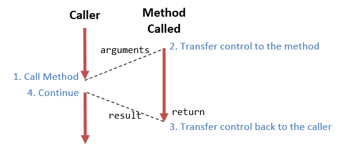Tracing Method Invocation
You can trace method operations under Eclipse/NetBeans (Refer to the the Eclipse/NetBeans How-to article):
- Step Over: Treat the method call as one single step.
- Step Into: Step into the method, so that you can trace the operations of the method.
- Step Out: Complete the current method and return to the caller.
- Set "Breakpoints" inside the method, and "resume" running to the next breakpoint.
Method Definition Syntax
The syntax for method definition is as follows:
public static returnValueType methodName(arg-1-type arg-1, arg-2-type arg-2,... ) { body; }
// Examples // Return circle's area given its radius public static double getArea(double radius) { return radius * radius * Math.PI; } // Return maximum among two given integers public static int max(int number1, int number2) { if (number1 > number2) { return number1; } else { return number2; } }
Take note that you need to specify the type of the arguments and the return value in method definition.
Calling Methods
To call a method, simply use methodName(arguments). For examples, to call the above methods:
// Calling getArea() double area1 = getArea(1.1); // with literal as argument double r2 = 2.2; double area2 = getArea(r2); // with variable as argument double r3 = 3.3; System.out.println("Area is: " + area(r3)); // Calling max() int result1 = max(5, 8); int i1 = 7, i2 = 9; int result2 = max(i1, i2); System.out.println("Max is: " + max(15, 16));
Take note that you need to specify the type in the method definition, but not during invocation.
Method Naming Convention
A method's name shall be a verb or verb phrase (action), comprising one or more words. The first word is in lowercase, while the rest are initial-capitalized (called camel-case). For example, getArea(), setRadius(), moveDown(), isPrime(), etc.
Another Example:
/** Example of Java Method definition and invocation */ public class EgMinMaxMethod { // The entry main() method public static void main(String[] args) { int a = 6, b = 9, max, min; max = max(a, b); // invoke method max() with arguments min = min(a, b); // invoke method min() with arguments System.out.println(max + "," + min); System.out.println(max(5, 8)); // invoke method max() System.out.println(min(5, 8)); // invoke method min() } // The max() method returns the maximum of two given int public static int max(int number1, int number2) { if (number1 > number2) { return number1; } else { return number2; } } // The min() method returns the minimum of two given int public static int min(int number1, int number2) { return (number1 < number2) ? number1 : number2; } }
The "return" statement
Inside the method body, you could use a return statement to return a value (of the returnValueType declared in the method's signature) to return a value back to the caller. The syntax is:
return aReturnValue; // of returnValueType declared in method's signature return; // return nothing (or void)
The "void" Return-Type
Suppose that you need a method to perform certain actions (e.g., printing) without a need to return a value to the caller, you can declare its return-value type as void. In the method's body, you could use a "return;" statement without a return value to return control to the caller. In this case, the return statement is optional. If there is no return statement, the entire body will be executed, and control returns to the caller at the end of the body.
Notice that main() is a method with a return-value type of void. main() is called by the Java runtime, perform the actions defined in the body, and return nothing back to the Java runtime.
Actual Parameters vs. Formal Parameters
Recall that a method receives arguments from its caller, performs the actions defined in the method's body, and return a value (or nothing) to the caller.
In the above example, the variable (double radius) declared in the signature of getArea(double radius) is known as formal parameter. Its scope is within the method's body. When the method is invoked by a caller, the caller must supply so-called actual parameters or arguments, whose value is then used for the actual computation. For example, when the method is invoked via "area1=getArea(radius1)", radius1 is the actual parameter, with a value of 1.1.
Code Example: Magic Number
The following program contains a boolean method called isMagic(int number), which returns true if the given number contains the digit 8, e.g., 18, 108, and 1288. The signature of the method is:
public static boolean isMagic(int number);
It also provides the main() method to test the isMagic(). For example,
Enter a positive integer: 1288 1288 is a magic number Enter a positive integer: 1234567 1234567 is not a magic number
import java.util.Scanner;
/**
* This program contains a boolean method called isMagic(int number), which tests if the
* given number contains the digit 8.
*/
public class MagicNumber {
public static void main(String[] args) {
// Declare variables
int number;
Scanner in = new Scanner(System.in);
// Prompt and read input as "int"
System.out.print("Enter a positive integer: ");
number = in.nextInt();
// Call isMagic() to test the input
if (isMagic(number)) {
System.out.println(number + " is a magic number");
} else {
System.out.println(number + " is not a magic number");
}
in.close();
}
/**
* Check if the given int contains the digit 8, e.g., 18, 82, 1688.
* @param number The given integer
* @return true if number contains the digit 8
* @Precondition number > 0 (i.e., a positive integer)
*/
public static boolean isMagic(int number) {
boolean isMagic = false; // shall change to true if found a digit 8
// Extract and check each digit
while (number > 0) {
int digit = number % 10; // Extract the last digit
if (digit == 8) {
isMagic = true;
break; // only need to find one digit 8
}
number /= 10; // Drop the last digit and repeat
}
return isMagic;
}
}Take note of the proper documentation comment for the method.
Code Example: int Array Methods
The following program contains various method for int array with signatures as follows:
public static void print(int[] array); // Print [a1, a2, ...., an] public static int min(int[] array); // Return the min of the array public static int sum(int[] array); // Return the sum of the array public static double average(int[] array); // Return the average of the array
It also contains the main() method to test all the methods. For example,
Enter the number of items: 5 Enter the value of all items (separated by space): 8 1 3 9 4 The values are: [8, 1, 3, 9, 4] The min is: 1 The sum is: 25 The average (rounded to 2 decimal places) is: 5.00
import java.util.Scanner;
/**
* Test various int[] methods.
*/
public class IntArrayMethodsTest {
public static void main(String[] args) {
// Declare variables
final int NUM_ITEMS;
int[] items; // Declare array name, to be allocated after numItems is known
// Prompt for a non-negative integer for the number of items;
// and read the input as "int". No input validation.
Scanner in = new Scanner(System.in);
System.out.print("Enter the number of items: ");
NUM_ITEMS = in.nextInt();
// Allocate the array
items = new int[NUM_ITEMS];
// Prompt and read the items into the "int" array, if array length > 0
if (items.length > 0) {
System.out.print("Enter the value of all items (separated by space): ");
for (int i = 0; i < items.length; ++i) {
items[i] = in.nextInt();
}
}
in.close();
// Test the methods
System.out.print("The values are: ");
print(items);
System.out.println("The min is: " + min(items));
System.out.println("The sum is: " + sum(items));
System.out.printf("The average (rounded to 2 decimal places) is: %.2f%n", average(items));
}
/**
* Prints the given int array in the form of [x1, x2, ..., xn]
* @param array The given int array
* @Postcondition Print output as side effect
*/
public static void print(int[] array) {
System.out.print("[");
for (int i = 0; i < array.length; ++i) {
System.out.print((i == 0) ? array[i] : ", " + array[i]);
}
System.out.println("]");
}
/**
* Get the min of the given int array
* @param array The given int array
* @return The min value of the given array
*/
public static int min(int[] array) {
int min = array[0];
for (int i = 1; i < array.length; ++i) {
if (array[i] < min) min = array[i];
}
return min;
}
/**
* Get the sum of the given int array
* @param array The given int array
* @return The sum of the given array
*/
public static int sum(int[] array) {
int sum = 0;
for (int item: array) sum += item;
return sum;
}
/**
* Get the average of the given int array
* @param array The given int array
* @return The average of the given array
*/
public static double average(int[] array) {
return (double)(sum(array)) / array.length;
}
}Pass-by-Value for Primitive-Type Parameters
In Java, when an argument of primitive type is pass into a method, a copy is created and passed into the method. The invoked method works on the cloned copy, and cannot modify the original copy. This is known as pass-by-value.
For example,
public class PassByValueTest {
public static void main(String[] args) {
int number = 8, result;
System.out.println("In caller, before calling the method, number is: " + number); // 8
result = increment(number); // invoke method with primitive-type parameter
System.out.println("In caller, after calling the method, number is: " + number); // 8
System.out.println("The result is " + result); // 9
}
// Return number + 1
public static int increment(int number) {
System.out.println("Inside method, before operation, number is " + number); // 8
++number; // change the parameter
System.out.println("Inside method, after operation, number is " + number); // 9
return number;
}
}Notes:
- Although there is a variable called
numberin both themain()andincrement()method, there are two distinct copies - one available inmain()and another available inincrement()- happen to have the same name. You can change the name of either one, without affecting the program.
Pass-by-Reference for Arrays and Objects
As mentioned, for primitive-type parameters, a cloned copy is made and passed into the method. Hence, the method cannot modify the values in the caller. It is known as pass-by-value.
For arrays (and objects - to be described in the later chapter), the array reference is passed into the method and the method can modify the contents of array's elements. It is known as pass-by-reference. For example,
import java.util.Arrays; // for Arrays.toString() public class PassByReferenceTest { public static void main(String[] args) { int[] testArray = {9, 5, 6, 1, 4}; System.out.println("In caller, before calling the method, array is: " + Arrays.toString(testArray)); // [9, 5, 6, 1, 4] // Invoke method with an array parameter increment(testArray); System.out.println("In caller, after calling the method, array is: " + Arrays.toString(testArray)); // [10, 6, 7, 2, 5] } // Increment each of the element of the given int array public static void increment(int[] array) { System.out.println("Inside method, before operation, array is " + Arrays.toString(array)); // [9, 5, 6, 1, 4] // Increment each elements for (int i = 0; i < array.length; ++i) ++array[i]; System.out.println("Inside method, after operation, array is " + Arrays.toString(array)); // [10, 6, 7, 2, 5] } }
Varargs - Method with Variable Number of Formal Arguments (JDK 5)
Before JDK 5, a method has to be declared with a fixed number of formal arguments. C-like printf(), which take a variable number of argument, cannot not be implemented. Although you can use an array for passing a variable number of arguments, it is not neat and requires some programming efforts.
JDK 5 introduces variable arguments (or varargs) and a new syntax "Type...". For example,
public PrintWriter printf(String format, Object... args) public PrintWriter printf(Local l, String format, Object... args)
Varargs can be used only for the last argument. The three dots (...) indicate that the last argument may be passed as an array or as a sequence of comma-separated arguments. The compiler automatically packs the varargs into an array. You could then retrieve and process each of these arguments inside the method's body as an array. It is possible to pass varargs as an array, because Java maintains the length of the array in an associated variable length.
public class VarargsTest {
// A method which takes a variable number of arguments (varargs)
public static void doSomething(String... strs) {
System.out.print("Arguments are: ");
for (String str : strs) {
System.out.print(str + ", ");
}
System.out.println();
}
// A method which takes exactly two arguments
public static void doSomething(String s1, String s2) {
System.out.println("Overloaded version with 2 args: " + s1 + ", " + s2);
}
// Cannot overload with this method - crash with varargs version
// public static void doSomething(String[] strs)
// Test main() method
// Can also use String... instead of String[]
public static void main(String... args) {
doSomething("Hello", "world", "again", "and", "again");
doSomething("Hello", "world");
String[] strs = {"apple", "orange"};
doSomething(strs); // invoke varargs version
}
}Notes:
- If you define a method that takes a varargs
String..., you cannot define an overloaded method that takes aString[]. - "varargs" will be matched last among the overloaded methods. The
varargsMethod(String, String), which is more specific, is matched before thevarargsMethod(String...). - From JDK 5, you can also declare your
main()method as:public static void main(String... args) { .... } // JDK 5 varargs
Implicit Type-Casting for Method's Parameters
A method that takes a double parameter can accept any numeric primitive type, such as int or float. This is because implicit type-casting is carried out. However, a method that take a int parameter cannot accept a double value. This is because the implicit type-casting is always a widening conversion which prevents loss of precision. An explicit type-cast is required for narrowing conversion. Read "Type-Casting" on the conversion rules.
Method Overloading
In Java, a method (of a particular method name) can have more than one versions, each version operates on different set of parameters - known as method overloading. The versions shall be differentiated by the numbers, types, or orders of the parameters.
Example 1
/** Testing Method Overloading */ public class AverageMethodOverloading { public static void main(String[] args) { System.out.println(average(8, 6)); // invoke version 1 System.out.println(average(8, 6, 9)); // invoke version 2 System.out.println(average(8.1, 6.1)); // invoke version 3 System.out.println(average(8, 6.1)); // int 8 autocast to double 8.0, invoke version 3 //average(1, 2, 3, 4) // Compilation Error - no such method } // Version 1 takes 2 int's public static int average(int n1, int n2) { System.out.println("version 1"); return (n1 + n2)/2; // int } // Version 2 takes 3 int's public static int average(int n1, int n2, int n3) { System.out.println("version 2"); return (n1 + n2 + n3)/3; // int } // Version 3 takes 2 doubles public static double average(double n1, double n2) { System.out.println("version 3"); return (n1 + n2)/2.0; // double } }
The expected outputs are:
version 1 7 version 2 7 version 3 7.1 version 3 7.05
Example 2: Arrays
Suppose you need a method to compute the sum of the elements for int[], short[], float[] and double[], you need to write all overloaded versions - there is no shortcut.
/** Testing Array Method Overloading */ public class SumArrayMethodOverloading { public static void main(String[] args) { int[] a1 = {9, 1, 2, 6, 5}; System.out.println(sum(a1)); // invoke version 1 double[] a2 = {1.1, 2.2, 3.3}; System.out.println(sum(a2)); // invoke version 2 float[] a3 = {1.1f, 2.2f, 3.3f}; //System.out.println(sum(a3)); // error - float[] is not casted to double[] } // Version 1 takes an int[] public static int sum(int[] array) { System.out.println("version 1"); int sum = 0; for (int item : array) sum += item; return sum; // int } // Version 2 takes a double[] public static double sum(double[] array) { System.out.println("version 2"); double sum = 0.0; for (double item : array) sum += item; return sum; // double } }
Notes:
- Unlike primitives, where
intwould be autocasted todoubleduring method invocation,int[]is not casted todouble[]. - To handle all the 7 primitive number type arrays, you need to write 7 overloaded versions to handle each array types!
"boolean" Methods
A boolean method returns a boolean value to the caller.
Suppose that we wish to write a method called isOdd() to check if a given number is odd.
/**
* Testing boolean method (method that returns a boolean value)
*/
public class BooleanMethodTest {
// This method returns a boolean value
public static boolean isOdd(int number) {
if (number % 2 == 1) {
return true;
} else {
return false;
}
}
public static void main(String[] args) {
System.out.println(isOdd(5)); // true
System.out.println(isOdd(6)); // false
System.out.println(isOdd(-5)); // false
}
}This seemingly correct code produces false for -5, because -5%2 is -1 instead of 1. You may rewrite the condition:
public static boolean isOdd(int number) {
if (number % 2 == 0) {
return false;
} else {
return true;
}
}
The above produces the correct answer, but is poor. For boolean method, you can simply return the resultant boolean value of the comparison, instead of using a conditional statement, as follow:
public static boolean isEven(int number) {
return (number % 2 == 0);
}
public static boolean isOdd(int number) {
return !(number % 2 == 0);
}
Mathematical Methods
JDK provides many common-used Mathematical methods in a class called Math. The signatures of some of these methods are:
double Math.pow(double x, double y) // returns x raises to power of y double Math.sqrt(double x) // returns the square root of x double Math.random() // returns a random number in [0.0, 1.0) double Math.sin() double Math.cos()
The Math class also provide two constants:
Math.PI // 3.141592653589793 Math.E // 2.718281828459045
To check all the available methods, open JDK API documentation ⇒ select module "java.base" ⇒ select package "java.lang" ⇒ select class "Math" ⇒ choose method (@ https://docs.oracle.com/javase/10/docs/api/java/lang/Math.html for JDK 10).
For examples,
int secretNumber = (int)Math.random()*100; // Generate a random int between 0 and 99 double radius = 5.5; double area = radius*radius*Math.PI; area = Math.pow(radius, 2)*Math.PI; // Not as efficient as above int x1 = 1, y1 = 1, x2 = 2, y2 = 2; double distance = Math.sqrt((x2-x1)*(x2-x1) + (y2-y1)*(y2-y1)); int dx = x2 - x1; int dy = y2 - y1; distance = Math.sqrt(dx*dx + dy*dy); // Slightly more efficient
Exercises on Methods
Command-Line Arguments
Java's main(String[] args) method takes an argument: String[] args, i.e., a String array named args. This is known as "command-line arguments", which corresponds to the augments provided by the user when the java program is invoked. For example, a Java program called Arithmetic could be invoked with additional command-line arguments as follows (in a "cmd" shell):
java Arithmetic 12 3456 +
Each argument, i.e., "12", "3456" and "+", is a String. Java runtime packs all the arguments into a String array and passes into the main() method as args. For this example, args has the following properties:
args = {"12", "3456", "+"} // "args" is a String array
args.length = 3 // length of the array args
args[0] = "12" // Each element of the array is a String
args[1] = "3456"
args[2] = "+"
args[0].length() = 2 // length of the String
args[1].length() = 4
args[2].length() = 1
Code Example: Arithmetic
The program Arithmetic reads three parameters form the command-line, two integers and an arithmetic operator ('+', '-', '*', or '/'), and performs the arithmetic operation accordingly. For example,
java Arithmetic 3 2 + 3+2=5 java Arithmetic 3 2 - 3-2=1 java Arithmetic 3 2 / 3/2=1
public class Arithmetic {
public static void main (String[] args) {
int operand1, operand2;
char theOperator;
operand1 = Integer.parseInt(args[0]); // Convert String to int
operand2 = Integer.parseInt(args[1]);
theOperator = args[2].charAt(0); // Consider only 1st character
System.out.print(args[0] + args[2] + args[1] + "=");
switch(theOperator) {
case ('+'):
System.out.println(operand1 + operand2); break;
case ('-'):
System.out.println(operand1 - operand2); break;
case ('*'):
System.out.println(operand1 * operand2); break;
case ('/'):
System.out.println(operand1 / operand2); break;
default:
System.out.printf("%nError: Invalid operator!");
}
}
}Exercises on Command-Line Arguments
(Advanced) Bitwise Operations
Bitwise Logical Operations
Bitwise operators perform operations on one or two operands on a bit-by-bit basis, as follows, in descending order of precedences.
| Operator | Mode | Usage | Description | Example |
|---|---|---|---|---|
| ~ | Unary | ~x |
Bitwise NOT (inversion) | |
| & | Binary | x & y |
Bitwise AND | |
| | | Binary | x | y |
Bitwise OR | |
| ^ | Binary | x ^ y |
Bitwise XOR |
Example
public class TestBitwiseOp {
public static void main(String[] args) {
int x = 0xAAAA_5555; // a negative number (sign bit (msb) = 1)
int y = 0x5555_1111; // a positive number (sign bit (msb) = 0)
System.out.printf("%d%n", x); // -1431677611
System.out.printf("%d%n", y); // 1431638289
System.out.printf("%08X%n", ~x); // 5555AAAAH
System.out.printf("%08X%n", x & y); // 00001111H
System.out.printf("%08X%n", x | y); // FFFF5555H
System.out.printf("%08X%n", x ^ y); // FFFF4444H
}
}Compound operator &=, |= and ^= are also available, e.g., x &= y is the same as x = x & y.
Take note that:
'&','|'and'^'are applicable when both operands are integers (int,byte,short,longandchar) orbooleans. When both operands are integers, they perform bitwise operations. When both operands arebooleans, they perform logical AND, OR, XOR operations (i.e., same as logical&&,||and^). They are not applicable tofloatanddouble. On the other hand, logical AND (&&) and OR (||) are applicable tobooleans only.System.out.println(true & true); // logical -> true System.out.println(0x1 & 0xffff); // bitwise -> 1 System.out.println(true && true); // logical -> true
- The bitwise NOT (or bit inversion) operator is represented as '~', which is different from logical NOT (
!). - The bitwise XOR is represented as
'^', which is the same as logical XOR (^). - The operators' precedence is in this order:
'~','&','^','|','&&','||'. For example,System.out.println(true | true & false); // true | (true & false) -> true System.out.println(true ^ true & false); // true ^ (true & false) -> true
Bitwise operations are powerful and yet extremely efficient. [Example on advanced usage.]
Bit-Shift Operations
Bit-shift operators perform left or right shift on an operand by a specified number of bits. Right-shift can be either signed-extended (>>) (padded with signed bit) or unsigned-extended (>>>) (padded with zeros). Left-shift is always padded with zeros (for both signed and unsigned).
| Operator | Mode | Usage | Description | Example |
|---|---|---|---|---|
| << | Binary | x << count |
Left-shift and padded with zeros | |
| >> | Binary | x >> count |
Right-shift and padded with sign bit (signed-extended right-shift) | |
| >>> | Binary | x >>> count |
Right-shift and padded with zeros (unsigned-extended right-shift) |
Since all the Java's integers (byte, short, int and long) are signed integers, left-shift << and right-shift >> operators perform signed-extended bit shift. Signed-extended right shift >> pads the most significant bits with the sign bit to maintain its sign (i.e., padded with zeros for positive numbers and ones for negative numbers). Operator >>> (introduced in Java, not in C/C++) is needed to perform unsigned-extended right shift, which always pads the most significant bits with zeros. There is no difference between the signed-extended and unsigned-extended left shift, as both operations pad the least significant bits with zeros.
Example
public class BitShiftTest {
public static void main(String[] args) {
int x = 0xAAAA5555; // a negative number (sign bit (msb) = 1)
int y = 0x55551111; // a positive number (sign bit (msb) = 0)
System.out.printf("%d%n", x); // -1431677611
System.out.printf("%d%n", y); // 1431638289
System.out.printf("%08X%n", x<<1); // 5554AAAAH
System.out.printf("%08X%n", x>>1); // D5552AAAH
System.out.printf("%d%n", x>>1); // negative
System.out.printf("%08X%n", y>>1); // 2AAA8888H
System.out.printf("%08d%n", y>>1); // positive
System.out.printf("%08X%n", x>>>1); // 55552AAAH
System.out.printf("%d%n", x>>>1); // positive
System.out.printf("%08X%n", y>>>1); // 2AAA8888
System.out.printf("%d%n", y>>>1); // positive
// More efficient to use signed-right-right to perform division by 2, 4, 8,...
int i1 = 12345;
System.out.println("i1 divides by 2 is " + (i1 >> 1));
System.out.println("i1 divides by 4 is " + (i1 >> 2));
System.out.println("i1 divides by 8 is " + (i1 >> 3));
int i2 = -12345;
System.out.println("i2 divides by 2 is " + (i2 >> 1));
System.out.println("i2 divides by 4 is " + (i2 >> 2));
System.out.println("i2 divides by 8 is " + (i2 >> 3));
}
}As seen from the example, it is more efficient to use sign-right-shift to perform division by 2, 4, 8... (power of 2), as integers are stored in binary.
[More example on advanced usage.]
Types and Bitwise Operations
The bitwise operators are applicable to integral primitive types: byte, short, int, long and char. char is treated as unsigned 16-bit integer. There are not applicable to float and double. The '&', '|', '^', when apply to two booleans, perform logical operations. Bit-shift operators are not applicable to booleans.
Like binary arithmetic operations:
byte,shortandcharoperands are first promoted toint.- If both the operands are of the same type (
intorlong), they are evaluated in that type and returns a result of that type. - If the operands are of different types, the smaller operand (
int) is promoted to the larger one (long). It then operates on the larger type (long) and returns a result in the larger type (long).
Algorithms
Before writing a program to solve a problem, you have to first develop the steps involved, called algorithm, and then translate the algorithm into programming statements. This is the hardest part in programming, which is also hard to teach because the it involves intuition, knowledge and experience.
An algorithm is a step-by-step instruction to accomplice a task, which may involve decision and iteration. It is often expressed in English-like pseudocode, before translating into programming statement of a particular programming language. There is no standard on how to write pseudocode - simply write something that you, as well as other people, can understand the steps involved, and able to translate into a working program.
Algorithm for Prime Testing
Ancient Greek mathematicians like Euclid and Eratosthenes (around 300-200 BC) had developed many algorithms (or step-by-step instructions) to work on prime numbers. By definition, a prime is a positive integer that is divisible by one and itself only.
To test whether a number x is a prime number, we could apply the definition by dividing x by 2, 3, 4, ..., up to x-1. If no divisor is found, then x is a prime number. Since divisors come in pair, there is no need to try all the factors until x-1, but up to √x.
// To test whether an int x is a prime int maxFactor = (int)Math.sqrt(x); // find the nearest integral square root of x assume x is a prime; for (int factor = 2; factor <= maxFactor; ++factor) { if (x is divisible by factor) { x is not a prime; break; // a factor found, no need to find more factors } }
TRY: translate the above pseudocode into a Java program called PrimeTest.
Algorithm for Perfect Numbers
A positive integer is called a perfect number if the sum of all its proper divisor is equal to its value. For example, the number 6 is perfect because its proper divisors are 1, 2, and 3, and 6=1+2+3; but the number 10 is not perfect because its proper divisors are 1, 2, and 5, and 10≠1+2+5. Other perfect numbers are 28, 496, ...
The following algorithm can be used to test for perfect number:
// To test whether int x is a perfect number
int sum = 0;
for (int i = 1; i < x; ++i) {
if (x is divisible by i) {
i is a proper divisor;
add i into the sum;
}
}
if (sum == x)
x is a perfect number
else
x is not a perfect number
TRY: translate the above pseudocode into a Java program called PerfectNumberTest.
Algorithm on Computing Greatest Common Divisor (GCD)
Another early algorithm developed by ancient Greek mathematician Euclid (300 BC) is to find the Greatest Common Divisor (GCD) (or Highest Common Factor (HCF)) of two integers. By definition, GCD(a,b) is the largest factor that divides both a and b.
Assume that a and b are positive integers and a >= b, the Euclidean algorithm is based on these two properties:
1. GCD(a, 0) = a 2. GCD(a, b) = GCD(b, a mod b), where "a mod b" denotes the remainder of a divides by b.
For example,
GCD(15, 5) = GCD(5, 0) = 5 GCD(99,88) = GCD(88,11) = GCD(11,0) = 11 GCD(3456,1233) = GCD(1233,990) = GCD(990,243) = GCD(243,18) = GCD(18,9) = GCD(9,0) = 9
The Euclidean algorithm is as follows:
GCD(a, b) // assume that a >= b while (b != 0) { // Change the value of a and b: a ← b, b ← a mod b, and repeat until b is 0 temp ← b b ← a mod b a ← temp } // after the loop completes, i.e., b is 0, we have GCD(a, 0) GCD is a
Before explaining the algorithm, suppose we want to exchange (or swap) the values of two variables x and y. Explain why the following code does not work.
int x = 55, y=66;
// swap the values of x and y
x = y;
y = x;
To swap the values of two variables, we need to define a temporary variable as follows:
int x = 55, y=66;
int temp;
// swap the values of x and y
temp = y;
y = x;
x = temp;
Let us look into the Euclidean algorithm, GCD(a, b) = a, if b is 0. Otherwise, we replace a by b; b by (a mod b), and compute GCD(b, a mod b). Repeat the process until the second term is 0. Try this out on pencil-and-paper to convince yourself that it works.
TRY: Write a program called GCD, based on the above algorithm.
Exercises on Algorithm
Summary
This chapter covers the Java programming basics:
- Comments, Statements and Blocks.
- Variables, Literals, Expressions.
- The concept of type and Java's eight primitive types:
byte,short,int,long,float,double,char, andboolean; andString. - Implicit and explicit type-casting.
- Operators: assignment (
=), arithmetic operators (+,-,*,/,%), increment/decrement (++,--) relational operators (==,!=,>,>=,<,<=), logical operators (&&,||,!,^) and conditional (? :). - Three flow control constructs: sequential, condition (
if,if-else,switch-caseand nested-if) and loops (while,do-while,forand nested loops). - Input (via
Scanner) & Output (print(),println()andprintf()) operations. - Arrays and the enhanced for-loop.
- Methods and passing parameters into methods.
- The advanced bitwise logical operators (
&,|,~,^) and bit-shift operators (<<,>>,>>>). - Developing algorithm for solving problems.
More References and Resources
- (MUST READ) "Code Conventions for the Java Programming Language" @ https://www.oracle.com/technetwork/java/codeconvtoc-136057.html, or google the title, Sun Microsystems (now Oracle), 1999.